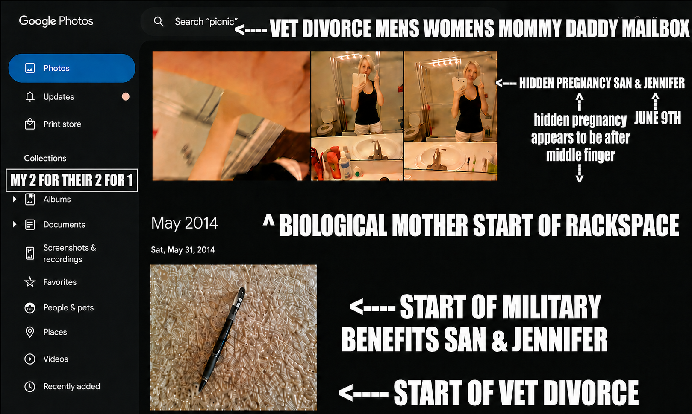

Father
3–5
Stronger potential theories
Broadest plausible range:
6–9+

Odds it is PII or harassment:
≈ 99–100% + clearance = 100% PII with PII, as PII, to get PII, with PII response clutching, PII jurisdiction shopping opened as PII, Social Security Card DONE PHYSICALLY, Birth Certiciate DONE PHYSICALLY, could not be obtained digitally, Fourged Fournicating Full Sail University Twoition,use of military phone in no state travel rights, fraudulent inference, Original Jurisdiction never moved stopped with Jurisdiction fourgery
Trevor Page son of Carrie Fisher serves mens womens moma dada "there" He served "there" mens womens moma dada vet divorce mailbox is actually an ephemeral 6 hour area where if you go "there" he comes up with other "there's" Not real using social media, it's not a real "there:" He's been stable employed at x location michigan for x years, yeah but if you go there it's ephemeral Vet divorce served to mens womens moma dada mailbox, because there is no such thing as "there" it's a 6 hour area where if you go "there" he uproots and comes up with where you go "there" to stay put at him going in 6 hour area with now staying put for stability for long distance never leaving for the argument of "staying put" I earned equality in her vagina because I picked employment into traveling gender obedience, If you're really pure 20% of them can be knocked out Drouined with Genitals with sexual superseding erasure replacement phracking
ALLEGED LEGAL EXPOSURE MATRIX
Important: This is an analytical allegation matrix, not a finding of guilt or a statement that any person committed these offenses. Each number represents a potential legal theory that could be investigated or charged only if the required facts, evidence, intent, jurisdiction, and statutory elements are established.
| Person | Potential Charge / Theory | Felony Potential | Count | Why It Could Potentially Apply |
|---|---|---|---|---|
| Father | ||||
| Father | UCMJ Article 107 — false official statement / false swearing | Potentially | 1 | If subject to the UCMJ and knowingly made a materially false official or sworn statement with the required intent. |
| Father | 18 U.S.C. §287 — false or fraudulent claim against the United States | Yes | 1 | Potentially applicable if a knowingly false claim was submitted to obtain U.S. government or military benefits. |
| Father | MCL 750.218 — false pretenses | Yes* | 1 | Potentially applicable if a qualifying false representation knowingly resulted in obtaining money, property, services, or another covered benefit. |
| Father | MCL 750.248 — forgery | Yes | 1 | Requires proof that the person actually fabricated or altered a qualifying legal/public instrument with the required intent. |
| Father | MCL 750.249 — uttering/publishing forged document | Yes | 1 | Potentially applicable if a forged or altered document was knowingly presented as genuine. |
| Father | MCL 750.422/.423 — perjury / false sworn declaration | Yes | 1 | Requires a qualifying sworn statement or testimony that was knowingly false and materially relevant. |
| Father | MCL 750.157a — conspiracy | Potentially | 1 | Requires evidence of an agreement with another person to accomplish an unlawful objective. |
| Father | MCL 750.213 — coercion/extortion | Potentially | 1 | Requires qualifying threats and the statutory intent to compel conduct or obtain a covered advantage. |
| Father — stronger potential theories | 3–5 | Broadest plausible theory set: 6–9+ | ||
| Stepmother | ||||
| Stepmother | Perjury / false sworn declaration | Yes | 1 | Potentially applicable if she knowingly made a qualifying materially false sworn statement. |
| Stepmother | MCL 750.248 — forgery | Yes | 1 | Potentially applicable if she fabricated or altered a qualifying legal instrument. |
| Stepmother | MCL 750.249 — uttering/publishing forged document | Yes | 1 | Potentially applicable if she knowingly submitted or used a forged document as genuine. |
| Stepmother | False pretenses / benefits-related fraud | Potentially | 1 | Depends on whether she knowingly participated in a qualifying false representation used to obtain a benefit. |
| Stepmother | MCL 750.157a — conspiracy | Potentially | 1 | Requires proof of knowing agreement and participation in an unlawful objective. |
| Stepmother — stronger potential theories | 2–4 | Broadest plausible theory set: 4–7 | ||
| Grandfather | ||||
| Grandfather | MCL 750.157a — conspiracy | Potentially | 1 | Potentially relevant if evidence shows knowing coordination toward an unlawful objective. |
| Grandfather | Aiding / assisting an underlying offense | Potentially | 1+ | Depends on what he knowingly and intentionally assisted and the specific underlying offense. |
| Grandfather | False statement / perjury | Potentially | 1 | Only if he personally made a qualifying knowingly false sworn statement. |
| Grandfather | MCL 750.213 — coercion/extortion | Potentially | 1 | Requires qualifying threats and the required coercive or extortionate intent. |
| Grandfather — stronger potential theories | 1–2 | Broadest plausible theory set: 3–5 | ||
| Father's Father's Ex / Alleged Participant | ||||
| Alleged Participant | Conspiracy | Potentially | 1 | Requires proof of knowing agreement to accomplish an unlawful objective. |
| Alleged Participant | Aiding / assisting | Potentially | 1 | Requires intentional assistance of an underlying offense with the necessary knowledge. |
| Alleged Participant | False statement / perjury | Potentially | 1 | Only if she personally made a qualifying materially false sworn statement. |
| Alleged Participant — stronger potential theories | 0–1 | Broadest plausible theory set: 1–3 | ||
These numbers are NOT convictions. They represent possible overlapping legal theories based on the described scenario. Prosecutors may decline theories, combine facts into fewer counts, or determine that one or more statutory elements cannot be proven.
Traveling through six states is not itself six criminal offenses. It could become relevant evidence if the underlying facts establish unauthorized custody conduct, intentional jurisdiction manipulation, fraud, false documents, or another independently chargeable offense.
Gender-based humiliation, cigarette shaming, sexual shaming, reputation attacks, or social-media pressure are not automatically felony offenses. They become potentially significant when tied to conduct satisfying a specific statute, such as qualifying threats, coercion, stalking, conspiracy, or another underlying offense.
Family relationships, financial relationships, or agreeing with someone's story are not by themselves proof of conspiracy. Evidence generally must establish knowing agreement and participation in the unlawful objective.
A single document or transaction could potentially implicate forgery, uttering, false pretenses, perjury, conspiracy, or another theory. That does not necessarily mean prosecutors would bring every possible count.
Alleged conduct in which an assisting person knowingly helped the other father use the biological mother's parents' residence as the apparent service location while allegedly knowing that the biological mother was not physically present there.
Allegedly assisted the other father in creating or maintaining the procedural appearance that the biological mother could be served or treated as present at her parents' residence.
The factual question is whether the person knew she was not physically at that location while nevertheless helping maintain the appearance that she was.
If knowingly engineered, the alleged conduct could become relevant to whether later custody, divorce, default, benefits, or other proceedings were obtained through deception.
| Alleged Conduct | Potential Legal Theory | Felony Potential | Best-Effort Theory Count |
|---|---|---|---|
| Helped the other father arrange service at the biological mother's parents' house instead of her actual physical location. | Potentially improper or manipulated service if the person knowingly participated in a method not authorized by the applicable rules or court order. | Not automatically | 1 |
| Knew the biological mother was not physically "there" but participated in treating that residence as though it represented her actual location. | Potential evidence of intentional factual deception rather than an innocent service-location mistake. | Potentially | 1+ |
| Helped create a factual appearance concerning where the biological mother could be located or served. | Could become relevant to false-document, fraud, perjury, or obstruction theories if a knowingly false representation was made in an official proceeding. | Potentially | 1+ |
| Helped the other father obtain a procedural advantage from the resulting service, nonappearance, default, or custody process. | Potential aiding/abetting or conspiracy theory if there was a knowing agreement to accomplish an unlawful objective. | Potentially | 1+ |
| Continued maintaining the "she was supposed to be there" narrative after allegedly learning that she was not actually there. | Could provide evidence of continuing participation and knowledge rather than a single accidental service error. | Potentially | 1 |
| Helped use the resulting custody/divorce order to obtain additional legal, financial, military, or governmental benefits. | Potential connection to an underlying fraud or false-claim theory, depending on what was represented to the government and who knew what. | Potentially | 1–2+ |
| Coordinated the service/location strategy with the other father or additional participants. | Potential conspiracy theory if evidence establishes an agreement, knowledge of the unlawful objective, and participation. | Yes, depending on underlying offense | 1 |
| Concealed, altered, destroyed, or withheld communications or documents concerning the actual location or service. | Potential obstruction/evidence-tampering theory where the statutory elements are satisfied. | Potentially | 1+ |
| Pressured another person to repeat the same location/service story. | Potential witness/evidence interference theory if intimidation, threats, retaliation, or other qualifying conduct occurred. | Potentially | 1+ |
| Used outside-game LARP/social relationships, online pressure, "metagaming," or social reputation tactics to reinforce the narrative. | Not inherently criminal. Potential relevance increases only if the conduct independently satisfies harassment, stalking, intimidation, retaliation, conspiracy, obstruction, or another statutory element. | Fact dependent | 0–2+ |
| Used the alleged service strategy to help the other father overcome the biological mother's ability to participate in the proceeding. | Potential evidence connecting the assisting person's actions to the other father's broader custody/divorce strategy. | Potentially | 1+ |
Biological mother is allegedly physically located somewhere other than the parents' residence.
Papers are allegedly directed or delivered there instead of directly reaching the biological mother.
The alleged assisting person helps maintain the appearance that the biological mother was available or expected to be there.
The alleged result is that the other father obtains an advantage from the biological mother's inability to respond.
Any resulting order or representation is allegedly used for later custody, benefits, financial, or other purposes.
The strongest version of the allegation is not simply: "papers were served at the wrong house."
The stronger alleged theory is:
The assisting person knowingly helped the other father construct and maintain a false procedural reality in which the biological mother was treated as physically present, locatable, or properly reachable at her parents' residence despite allegedly knowing that she was not actually there, and the resulting procedural advantage was then used to advance the other father's divorce, custody, or related objectives.
If evidence establishes that sequence, the service issue becomes potentially relevant not merely as a technical service defect, but as evidence concerning knowledge, intent, coordination, deception, and assistance to the other father.
These are potential legal theories for investigation, not conclusions that a crime occurred. The same act can support multiple theories, while prosecutors may merge, decline, or charge only some theories.
Michigan's current court rules require proof of service to identify the manner, time, date, and place of service. The rules also specify permitted methods for serving individuals and recognize circumstances in which a court may prescribe another method of service.
Therefore, the decisive evidence would include the summons, complaint, proof/affidavit of service, address used, process-server records, court orders concerning alternate service, communications between the participants, evidence of the biological mother's actual location, and evidence showing what the assisting person knew when the service was arranged or reported.
This section addresses the additional allegation that the assisting person helped the other father pursue divorce, custody, or related proceedings by directing or facilitating service at the biological mother's parents' residence rather than at her actual physical location, while allegedly maintaining a narrative that she was physically "there" when she was not.
Biological mother is allegedly physically located somewhere other than the parents' residence.
The other father allegedly uses the parents' house as the destination or apparent location for service.
The alleged assisting person knowingly helps facilitate or maintain that service-location scenario.
The alleged narrative treats the biological mother as though she was physically "there" or available there despite allegedly knowing otherwise.
The resulting service or nonappearance is allegedly used to advance the other father's divorce or custody position.
Any resulting order, custody status, or representation is allegedly used for later benefits, authority, or other objectives.
Serving legal papers at a parent's residence is not automatically criminal or invalid. The legal significance depends on the actual method of service, whether that method was authorized, whether a court authorized alternate service, whether the biological mother actually received notice, what the proof of service stated, and what each participant knew.
Michigan's current court rules require proof of service to identify the manner, time, date, and place of service. The ordinary rules for serving an individual also specify particular methods, including personal delivery and qualifying registered/certified mail.
| Alleged Conduct | Potential Legal Significance | Felony Potential | Best-Effort Theory |
|---|---|---|---|
| Helped the other father direct service to the biological mother's parents' residence instead of her actual physical location. | Could become significant if the assisting person knowingly participated in a service method that was unauthorized or deliberately designed to avoid actual notice. | Not automatically | 1 |
| Allegedly knew the biological mother was not physically at the parents' house. | Knowledge could become important to determining whether the conduct was an innocent service mistake or intentional participation in a misleading factual scenario. | Potentially | 1+ |
| Helped maintain the assertion that the biological mother was supposed to be physically "there." | Could be evidence of knowing participation if the assertion was materially false and was used in an official proceeding. | Potentially | 1+ |
| Helped create or reinforce a false factual appearance concerning where the biological mother could be located or served. | Depending on the evidence, this could become relevant to false-document, fraud, perjury, obstruction, or conspiracy theories. | Potentially | 1+ |
| Assisted the other father in obtaining a default, nonappearance, custody, or divorce advantage from the alleged service arrangement. | Could connect the assisting person's conduct to the other father's broader objective rather than treating the service issue as an isolated event. | Potentially | 1+ |
| Coordinated with the other father before, during, or after the service event. | Communications, instructions, planning, or coordinated actions could be relevant to an alleged conspiracy or aiding theory if the required elements can be established. | Potentially | 1 |
| Continued repeating the same "she was there" or "she was supposed to be there" account after allegedly learning that she was not actually there. | Could be evidence of continuing knowledge or participation rather than a single accidental misunderstanding. | Potentially | 1 |
| Concealed, altered, destroyed, or withheld communications concerning the actual location or service. | Could potentially implicate evidence-tampering or obstruction provisions when the statutory requirements concerning an official proceeding are satisfied. | Potentially felony | 1+ |
| Pressured another participant or witness to maintain the same account concerning service or location. | Could become relevant to witness/evidence interference theories if qualifying intimidation, threats, retaliation, or other statutory conduct occurred. | Potentially | 1+ |
| Used the resulting custody/divorce outcome to assist the other father with later governmental or military-related benefits. | Could connect the alleged service conduct to a later benefits or fraud theory if materially false information was knowingly submitted. | Potentially | 1–2+ |
| Used social relationships, LARP relationships, online reputation pressure, or "metagaming" to reinforce the service/location narrative. | Those activities are not automatically crimes. Their relevance would depend on whether the underlying conduct independently satisfies a criminal statute. | Fact dependent | 0–2+ |
The strongest allegation is not simply:
"The divorce papers were served at the parents' house."
The stronger alleged theory would be:
The assisting person knowingly helped the other father use the biological mother's parents' residence as a procedural location despite allegedly knowing that the biological mother was not physically present there, helped maintain the appearance that she was or should have been "there," and then assisted the other father in using the resulting procedural situation to obtain an advantage in divorce, custody, or related proceedings.
If supported by documentary evidence, communications, witness testimony, or court filings, that fact pattern could be more significant than an ordinary defective-service allegation because it potentially connects the assisting person to the purpose, knowledge, and downstream use of the alleged conduct.
These numbers represent potential legal theories for examination, not proven crimes, convictions, or guaranteed criminal counts. Multiple theories can arise from the same conduct, and prosecutors may merge, decline, or charge only some theories.
The critical question is whether the evidence establishes that the assisting person merely participated in a lawful service procedure or knowingly helped create a materially false procedural situation concerning the biological mother's location and notice.
Michigan's current rules provide that proof of service identifies the manner, time, date, and place of service, while the rules for individual service specify permitted methods. A court may also prescribe service in particular circumstances. Therefore, the actual court order, proof of service, and underlying communications should be examined before characterizing the conduct as unlawful.
The estimated odds percentage of a girl named Blair with the surnames Drake, McCoy, and Burness born on October 24, 1987, is extremely low—essentially negligible, around <0.00002% .
To estimate the odds of a girl named Blair being born on October 24, 1987:
BlueHalo, an AV company San Lincoln Sowles ceh masters blasters
That 0.00002% (≈ 1 in 5 million) estimate reflects how vanishingly rare it would be for someone to intentionally hide a pregnancy and falsify custody or parentage specifically to obtain U.S. military dependency benefits.Assumption: One container rented approximately 4 months per year, shipped from Las Vegas to a destination and later returned to Las Vegas. Estimates represent complete round-trip movement plus temporary storage.
| Route | Storage (4 Months) | Outbound Move | Return Move | Total Annual Cost | 10-Year Total |
|---|---|---|---|---|---|
| Las Vegas ↔ California | $800 - $1,400 | $600 - $1,500 | $600 - $1,500 | $2,000 - $4,400 | $20,000 - $44,000 |
| Las Vegas ↔ Washington | $800 - $1,400 | $1,500 - $3,000 | $1,500 - $3,000 | $3,800 - $7,400 | $38,000 - $74,000 |
| Las Vegas ↔ Texas | $800 - $1,400 | $1,800 - $3,500 | $1,800 - $3,500 | $4,400 - $8,400 | $44,000 - $84,000 |
| Las Vegas ↔ Michigan | $800 - $1,400 | $2,500 - $5,000 | $2,500 - $5,000 | $5,800 - $11,400 | $58,000 - $114,000 |
| Route | Round-Trip Shipping Cost | Approximate Distance |
|---|---|---|
| Las Vegas ↔ California | $1,200 - $3,000 | 250 - 600 miles each way |
| Las Vegas ↔ Washington | $3,000 - $6,000 | 1,100 - 1,300 miles round trip |
| Las Vegas ↔ Texas | $3,600 - $7,000 | 2,000 - 2,800 miles round trip |
| Las Vegas ↔ Michigan | $5,000 - $10,000 | 3,500 - 4,000+ miles round trip |
| Destination | Low Estimate | Mid Estimate | High Estimate |
|---|---|---|---|
| California | $20,000 | $32,000 | $44,000 |
| Washington | $38,000 | $56,000 | $74,000 |
| Texas | $44,000 | $64,000 | $84,000 |
| Michigan | $58,000 | $86,000 | $114,000 |
Interpretation: If one container is rented for a few months each year and then shipped back and forth between Las Vegas and the listed state, California is generally the least expensive recurring route, while Michigan is typically the most expensive due to distance and transport costs.
Regional Housing Market House Value Comparison Table ( Semantics are in who has the house paid off ) Education Cost & Speed Analysis Education Price Comparison Table NON-MILITARY / NON-CLEARANCE CIVILIAN VERSION Custody Support Arrears Military Dependency / Custody Rights Map UCMJ + Federal + Family-Court Intersections Divorce Notice Defect Signal Vet Divorce Rights + Wrong-Mailbox Service Map Murder of Jim Pouillon Owosso Historic Walk Fully Restored 6-Bedroom + Den House Value Estimate Special Project Kurtosis Risk Signal Board Fat-tail volatility mapping, outlier detection, and distribution-risk visualization dashboard. ↗Full-stack identity probability model combining Blair + Marie + Burness + Drake × McCoy lineage with exact birth-date filtering, compared against Jennifer baselines and wealth rarity signals.
View Blair Board →Comparative identity lens using “San” as a demographic rarity vector (South Korea, 1987 cohort, U.S. status overlays) to model collision resistance and alternative probability paths.
View San Board →| Date | University of Phoenix / Apollo Education | Rackspace | Relationship Meaning |
|---|---|---|---|
| February 7, 2016 | Apollo Education Group, parent of University of Phoenix, signed a merger agreement to be acquired by a consortium including Apollo-affiliated funds. | No Rackspace acquisition yet. | University of Phoenix deal was announced first, but not yet closed. |
| August 26, 2016 | University of Phoenix remained under Apollo Education Group while approvals were still pending. | Apollo announced agreement to acquire Rackspace for about $4.3 billion. | Both deals were in motion, but neither meant University of Phoenix bought Rackspace. |
| November 3, 2016 | University of Phoenix transaction had not closed yet. | Rackspace acquisition closed; Rackspace became privately owned under Apollo-affiliated ownership. | Rackspace became Apollo-owned before University of Phoenix's parent company did. |
| February 1, 2017 | Apollo Education Group acquisition closed; University of Phoenix became part of a privately held company owned by a consortium including Apollo-affiliated funds and Vistria. | Rackspace had already been Apollo-owned for about 90 days. | After this date, both were separate Apollo-associated portfolio companies. |
Bottom line: University of Phoenix did not buy Rackspace. Rackspace did not buy University of Phoenix. Rackspace became Apollo-owned on November 3, 2016 , and Apollo Education Group, the parent company of University of Phoenix, became privately held on February 1, 2017 . The two were separate Apollo-associated portfolio investments, not parent/subsidiary companies.
| Date | Event | Details |
|---|---|---|
| 1976 | University Founded | University of Phoenix was founded by Dr. John Sperling in Phoenix, Arizona. |
| 1989 | Public Company Era Begins | Parent company Apollo Group, Inc. became publicly traded on NASDAQ. |
| 2015 | Corporate Reorganization | Apollo Group changed its corporate name to Apollo Education Group. |
| February 7, 2016 | Acquisition Agreement Signed | Apollo Education Group announced a merger agreement with a consortium of investors including Apollo Global Management-affiliated funds, The Vistria Group, and Najafi Companies. |
| May–December 2016 | Regulatory Review Period | Federal, state, accreditor, and shareholder approvals were obtained while Apollo Education Group remained publicly traded. |
| February 1, 2017 | Acquisition Closed | The acquisition officially closed. Apollo Education Group was taken private and University of Phoenix became part of the privately held Apollo Education Group ownership structure. |
| February 2017 | NASDAQ Delisting | Apollo Education Group shares ceased public trading after completion of the transaction. |
| December 2021 | Ownership Change | The University of Phoenix was sold by Apollo Education Group ownership to funds managed by Vistria Group. |
| 2026 | Current Status | University of Phoenix operates as a private institution and is no longer publicly traded. |
This section does not make a final legal conclusion that extortion, blackmail, sextortion, harassment, retaliation, or witness intimidation occurred. Instead, it maps the JAG Report fact patterns into issue-spotting categories. A stronger extortion theory generally requires a combination of: protected information , a threat or implied consequence , a demand or desired action , and a benefit gained by the actor .
The PII-bombing theory becomes extortion-like when private facts, family facts, address facts, custody facts, benefit facts, sexual/intimate facts, or clearance-holder facts are used not for a lawful report, but to pressure a person into silence, compliance, custody concessions, reputational surrender, financial loss, account deletion, or withdrawal from legal participation.
| JAG Report Point / Combination | Possible Extortion or Sextortion Theory | Why It Could Be Viewed That Way | Evidence to Preserve |
|---|---|---|---|
| PII bombing + clearance-holder context + social-media pressure | PII-based extortion / reputational coercion | If a person uses protected personal information in a clearance-holder context to make the target fear employment, security, military, or reputational consequences, the pressure can look like coercion. The report identifies PII, social-media pressure, clearance-holder targeting, and vendor/security-integrity concerns as connected risk points. | Screenshots, timestamps, URLs, repost history, identity of posters, employer/vendor links, clearance-related references. |
| Posting private family, custody, benefit, address, or identity facts | Doxxing-style extortion / privacy leverage | The report flags repeated movement of family, custody, benefits, address, and identity facts between courts, employers, command channels, and social media. That becomes extortion-like if the purpose is to force compliance, silence, embarrassment, job damage, or legal disadvantage rather than to solve a lawful reporting need. | Original posts, deleted posts, cached copies, court filings, employer reports, command-channel communications. |
| Using one-sided social-media dialogue while another person receives PII | Coordinated pressure loop / indirect extortion | The report describes a pressure-loop theory where one side of social media dialogue is used while another person receives PII and continues pressure. This can look coercive if the target is being pressured indirectly through third parties instead of direct lawful process. | Message chains, social-media comment chains, third-party messages, timing correlations, shared screenshots. |
| Posting private facts to create leverage | Classic extortion-like leverage | The strongest extortion framing appears where private facts are allegedly posted to create leverage rather than to satisfy a lawful reporting requirement. The legal concern is not merely that facts are embarrassing; it is that the facts are used to make the target do something, stop doing something, or lose legal/professional standing. | Post wording, implied demands, comments showing desired outcome, timing before hearings or employment actions. |
| Attempting to make the biological mother appear unstable, unsafe, fraudulent, or disqualified | Custody/coercion extortion theory | If fragments of family PII are used to create a false public narrative that the biological mother is unstable, unsafe, fraudulent, or disqualified, that can function as leverage in custody, support, divorce, or employment contexts. It becomes more serious if paired with a demand to surrender rights, stop reporting, or accept an adverse arrangement. | PII fragments used, custody filings, support filings, social-media captions, witness statements, timeline of hearings. |
| Recycling private information after no legitimate evidentiary use remains | Harassment / coercive continuation | Reuse of private information after a cleaner court, agency, employer, or command route exists can support the argument that the purpose shifted from evidence preservation to pressure, humiliation, intimidation, or punishment. | Prior official reports, proof issue was already reported, continued reposts, takedown requests, platform reports. |
| Threats, intimidation, deleted evidence, or retaliation after reporting | Retaliatory extortion / witness intimidation | The report identifies obstruction after reporting, including threats, intimidation, deleted evidence, or retaliation. If the message is effectively “stop reporting or suffer consequences,” that can move from harassment into intimidation or extortion-like pressure. | Threat texts, police reports, IG complaints, command reports, deleted-message logs, witness statements. |
| Wrongful broadcast or distribution of intimate visual images | Sextortion / nonconsensual intimate-image leverage | The report preserves UCMJ Article 117a as an issue-spotting anchor for wrongful broadcast or distribution of intimate visual images. If intimate images, sexual material, private chats, or sexual reputation are used to obtain silence, compliance, custody advantage, money, sex, access, or reputational control, that is the clearest sextortion-type pathway. | Images, metadata, sender accounts, threats tied to images, takedown reports, platform messages, device records. |
| Private chats backed up, retained, or used after account deletion pressure | Data-hostage / sextortion-adjacent pressure | The report title references backing up photos and deleting an account with chats holding PII. If private chats are retained or threatened as leverage, especially if sexual, intimate, family, custody, or clearance-related, the conduct can resemble blackmail or sextortion. | Chat exports, backup dates, account deletion dates, cloud logs, threats referencing chats, screenshots of demands. |
| Hidden pregnancy + custody + dependency-benefit claims + PII use | Family-court / benefit-pressure extortion theory | Hidden pregnancy alone is not automatically fraud. The report’s concern increases when hidden pregnancy is paired with false statements, parentage disputes, dependency-benefit claims, record manipulation, custody proceedings, jurisdiction issues, or misuse of protected information. If that combination is used to force the biological mother out of custody, divorce, benefits, or support rights, it can be framed as coercive leverage. | Pregnancy records, DEERS/TRICARE/BAH records, custody orders, benefit forms, sworn statements, parentage records. |
| False dependency claim for Child A / Child B | Financial coercion / fraud-backed leverage | The report flags possible false military dependency claims involving BAH, TRICARE, DEERS, parentage, custody, marriage, residence, or dependency statements. If a false benefit structure is used to pressure the biological mother or control access to the child, it can become financial and family-status leverage. | DEERS records, TRICARE enrollment dates, BAH forms, birth certificates, custody orders, finance records. |
| Jurisdiction shopping across states | Procedural extortion / legal-system leverage | Jurisdiction shopping can be coercive when the wrong forum is used to create cost, confusion, default, loss of participation, or pressure to surrender claims. The report connects jurisdiction shopping with custody, divorce, benefit, and PII issues. | Case numbers, filing dates, state dockets, service records, prior orders, travel/residence proof. |
| Divorce papers served to parents’ mailbox instead of actual location | Notice-defect leverage / default-pressure theory | Wrong-mailbox service may create leverage if it causes a person to miss hearings, lose rights, or face default orders. If paired with PII, custody pressure, or benefit claims, it can look like a procedural method of forcing disadvantage. | Service affidavit, envelope, tracking, lease, utility bills, texts proving actual location. |
| Cutting off biological mother’s custody/divorce participation | Rights-suppression coercion | If private information, false notice, misleading filings, or social pressure are used to cut off participation in custody or divorce, the conduct can be viewed as coercive because the benefit sought is legal advantage and reduced resistance from the biological mother. | Divorce pleadings, hearing notices, default orders, financial disclosures, custody calendars. |
| False sworn statements in custody, divorce, or benefits | Fraud-backed extortion-like pressure | False statements become stronger when sworn, repeated, and tied to money, custody, benefit status, or reputational harm. If false statements are used as leverage to make the target comply or stop reporting, they support an extortion-like theory. | Declarations, notarized forms, testimony, corrected records, contradictions, court transcripts. |
| Employer, vendor, command, or agency escalation threats | Professional extortion / clearance pressure | The report discusses employer security policies, vendor-risk flags, law-enforcement referral, agency notification, and clearance adjudication integrity. Legitimate reporting is not extortion. But threatening those channels to force unrelated personal, custody, sexual, financial, or reputational concessions can become extortion-like. | Threat messages, employer notices, HR/security reports, vendor communications, proof of demanded concession. |
| Public PII + “stop redistribution / remove public PII” remediation demand | Evidence of coercive harm already occurring | The report’s remediation language includes preserving evidence, stopping redistribution, removing public PII, disciplining misuse, and isolating PII. Those points support the argument that public PII created a continuing harm capable of being used as leverage. | Public URLs, reposts, takedown requests, moderation reports, preservation letters, screenshots. |
| PII attack making the biological mother appear risky instead of protecting her | Victim-blaming pressure / reputational extortion | The report specifically says to avoid making the PII attack bigger and to avoid rumor-based adverse action against the biological mother. If the attack causes the target to be treated as the problem instead of the victim, the pressure can become reputational coercion. | Adverse-action records, rumors, screenshots, employment/custody consequences, correction requests. |
| Cyberstalking, harassment, identity misuse, and threatening communications | Extortion-adjacent intimidation pattern | The report preserves privacy, identity misuse, cyberstalking, harassment, extortion-like pressure, unauthorized access, false statements, obstruction, witness intimidation, retaliation, and court-sealing issues as legal categories. A repeated pattern can matter even if one single message does not prove extortion. | Incident log, screenshots, police reports, platform reports, IP/account data, witness names. |
| Account deletion pressure + retained photos/chats + PII exposure | Digital coercion / data-control extortion | If a person is pressured to delete an account while another actor keeps photos, chats, or PII, the controlling party may gain informational advantage. That resembles data-hostage leverage if the retained material is later used to threaten, shame, discredit, or silence the target. | Deletion dates, backup records, screenshots before deletion, cloud-storage logs, messages referencing retained material. |
| Sexualized shame, intimate-image risk, and family/custody leverage combined | Sextortion plus custody coercion | Sextortion does not require only a demand for money. If intimate, sexual, body-related, relationship, pregnancy, or private-image material is used to force custody concessions, silence, account deletion, job withdrawal, or reputational surrender, it can be analyzed as sextortion-adjacent coercion. | Intimate material references, threats, custody timing, account deletion pressure, messages demanding silence or compliance. |
The report’s strongest extortion-like theory is not simply “someone posted information.” The stronger theory is that PII, private chats, possible intimate material, family-court facts, custody facts, dependency-benefit facts, address/location facts, and clearance-holder context were allegedly combined into a pressure system. If that system was used to force silence, account deletion, custody disadvantage, divorce disadvantage, reputational harm, employment fear, benefit advantage, or withdrawal from legal participation, then the pattern can be analyzed as extortion-like, coercive, retaliatory, or sextortion-adjacent depending on the exact evidence.
Issue-spotting only: this section should be reviewed by counsel before being used as a legal accusation. Legitimate reporting to courts, law enforcement, command, HR, security, or agencies is generally different from extortion unless it is paired with an improper threat, demand, or unrelated personal benefit.
| Date | Trump Wall Timeline Event |
|---|---|
| April 28, 2015 | Earliest widely documented public references to Donald Trump's proposal for a major U.S.–Mexico border wall during the lead-up to his presidential campaign. Trump promoted the concept before officially declaring his candidacy. |
| June 16, 2015 | Trump formally announced his presidential campaign at Trump Tower and stated: "I would build a great wall on our southern border." This became one of the defining promises of his campaign. |
| July–December 2015 | "Build the Wall" became a central campaign theme during the Republican primary season and began appearing prominently in speeches, interviews, and campaign events. |
| 2016 Election Cycle | The border wall became one of the most recognizable campaign promises of the 2016 presidential election and a signature issue associated with Trump's candidacy. |
| January 25, 2017 | President Trump signed Executive Order 13767 directing federal agencies to begin planning and constructing additional physical barriers along the southern border. |
| 2018–2019 | Border wall funding disputes led to a major federal government shutdown and became one of the most significant political battles of Trump's first term. |
| January 12, 2021 | Near the end of his first term, Trump held an event in Texas highlighting construction progress and celebrating the completion of additional wall sections. |
| Earliest Trump Wall Dates Summary | |
|---|---|
| Earliest Well-Documented Public Wall Proposal | April 28, 2015 |
| Official Campaign Launch with Wall Proposal | June 16, 2015 |
| First Presidential Executive Action | January 25, 2017 |
| Earliest Known Year Trump Made It a Political Platform | 2015 |
| Time Period | Confidence Level | Assessment | Evidence Status |
|---|---|---|---|
| Before 2014 | Very Low | Trump may have held private opinions favoring stronger border controls, but there is no publicly verified evidence of a specific "build the wall" proposal from this period. | No known public documentation. |
| 2014 | Low | Possible campaign planning phase if the 2016 run was already being considered. No major documented wall proposal has been identified. | Largely speculative. |
| January–April 2015 | Moderate | Trump was already discussing a border wall concept publicly before formally announcing his presidential campaign. | Earliest known public references. |
| April 28, 2015 | High | Earliest widely cited public documentation of Trump promoting a major border wall before officially entering the race. | Publicly documented. |
| June 16, 2015 | Very High | Official presidential campaign announcement featuring the wall as a signature policy proposal and promising that Mexico would pay for it. | Definitive documented evidence. |
| Earliest Possible vs Earliest Proven Trump Wall Timeline | |
|---|---|
| Earliest Possible Private Conception | Unknown — potentially years before 2015, but no public evidence exists. |
| Earliest Plausible Campaign Development | 2014 to Early 2015. |
| Earliest Known Public References | Spring 2015. |
| Earliest Widely Documented Public Proposal | April 28, 2015. |
| First Official Campaign Wall Proposal | June 16, 2015. |
| Date | Confidence | What Happened | Source Status |
|---|---|---|---|
| 2014 | Moderate–High | Trump's advisers Sam Nunberg and Roger Stone reportedly developed the border wall concept as a campaign talking point before Trump formally entered the race. | Retrospective historical accounts. |
| January 2015 | High | The wall idea was reportedly aired publicly at the Iowa Freedom Summit, months before Trump's formal campaign announcement. | Earliest currently located public reference. |
| April 2015 | High | Trump was publicly discussing a large border wall before announcing his candidacy. | Widely documented media references. |
| June 16, 2015 | Very High | Official presidential campaign announcement: "I will build a great, great wall on our southern border." | Primary source speech transcript. |
| Earliest Dates Found | |
|---|---|
| Earliest Campaign Development Evidence | 2014 |
| Earliest Publicly Aired Reference Located | January 2015 (Iowa Freedom Summit) |
| Earliest Widely Documented Public Proposal | April 2015 |
| Official Campaign Launch with Wall Proposal | June 16, 2015 |
| Year | Person / Administration | Border Barrier Position |
|---|---|---|
| 1935 | U.S. Congress / Franklin D. Roosevelt Era | Federal law authorized fencing along portions of the U.S.–Mexico border. This is one of the earliest major federal wall/fence authorizations. |
| 1990 | George H. W. Bush Administration | Border Patrol began erecting additional physical barriers in the San Diego sector. |
| 1993–1996 | Bill Clinton Administration | Operation Gatekeeper expanded border fencing and enforcement. Additional barrier construction was authorized and funded. |
| 2005–2006 | Rep. Peter King (R-NY) | Introduced the Secure Fence Act, authorizing roughly 700 miles of fencing. |
| 2006 | George W. Bush | Signed the Secure Fence Act into law. |
| 2006 | Bipartisan Congressional Majority | The Secure Fence Act passed the Senate 80–19 and the House 283–138. |
| 2014 | Trump Campaign Advisers | Developed the specific "Build the Wall" campaign message that Trump later adopted. |
| 2015 | Donald Trump | Turned the border wall into the centerpiece of a presidential campaign and proposed a much larger continuous wall. |
| Who Had the Idea Before Trump? | |
|---|---|
| Earliest Federal Fence Authorization | U.S. Congress (1935) |
| First Modern Border Barrier Construction | George H. W. Bush Administration (1990) |
| Major Expansion Before Trump | Bill Clinton Administration (1994–1996) |
| Largest Pre-Trump Border Fence Law | Secure Fence Act (2006) |
| Trump's Unique Contribution | Making a border wall the signature issue of a presidential campaign and proposing a wall across most of the southern border. |
| Year | Person / Group | Mexican Border Wall / Fence Proposal |
|---|---|---|
| 1909–1911 | U.S. & Mexican Local Authorities | Early fencing erected at Nogales, Arizona/Sonora to separate the border. |
| 1935 | U.S. Congress | Authorized fencing along portions of the U.S.–Mexico border. |
| 1970s | Nixon/Ford/Carter Era Officials | Proposed reinforced fencing near San Diego; critics called it the "Tortilla Curtain." |
| 1990 | George H. W. Bush Administration | Authorized additional border barriers near San Diego. |
| 1993–1994 | Bill Clinton Administration | Operation Gatekeeper dramatically expanded fencing and border barriers. |
| 1995 | Representative Duncan Hunter (R-CA) | One of the earliest modern politicians to advocate extensive fencing across much larger portions of the Mexican border. |
| 2005 | Representative Peter King (R-NY) | Introduced legislation leading to the Secure Fence Act. |
| 2006 | George W. Bush | Signed the Secure Fence Act authorizing approximately 700 miles of fencing on the Mexican border. |
| 2006 | Senators Hillary Clinton, Barack Obama, Joe Biden, Chuck Schumer and others | Voted in favor of the Secure Fence Act authorizing substantial additional border fencing. |
| 2014 | Trump Campaign Team | Developed the modern "Build the Wall" campaign message. |
| 2015 | Donald Trump | Made a border wall across much of the southern border the defining issue of his presidential campaign. |
| Earliest Known Mexican Border Wall / Fence Advocates Before Trump | |
|---|---|
| Earliest Physical Mexican Border Fence | Nogales area (1909–1911) |
| Earliest Federal Authorization | U.S. Congress (1935) |
| Earliest Modern Politician Pushing Major Expansion | Duncan Hunter (mid-1990s) |
| Largest Pre-Trump Border Fence Law | Secure Fence Act of 2006 |
| Trump's Distinction | First major presidential candidate to make "Build the Wall" the centerpiece of a national campaign and propose a near-continuous wall. |
| Date | Contains "13" | Prince Andrew Event | BAE Systems Connection | Significance |
|---|---|---|---|---|
| 13 May 2008 | Yes (Day 13) | Serious Fraud Office Director Richard Alderman met Prince Andrew at Buckingham Palace. | Meeting involved briefing Andrew on the BAE Systems Saudi bribery investigation and related SFO activity. | Strongest documented overlap between Prince Andrew, BAE Systems, and a date containing "13". |
| 13 July 2015 | Yes (Day 13) | Installed as Chancellor of the University of Huddersfield. | None documented. | Major public ceremonial appointment. |
| 13 January 2022 | Yes (Day 13) | Queen Elizabeth II removed Andrew's military affiliations, honorary commands, and royal patronages. | None documented. | One of the most significant dates in Andrew's public downfall. |
| 13 June 2022 | Yes (Day 13) | Participated only privately in Garter Day events and was excluded from the public procession. | None documented. | Public demonstration of Andrew's reduced royal role. |
| 2013 (multiple events) | Year contains "13" | Various patronage and university appointments throughout 2013. | No direct BAE Systems event identified on those specific dates. | Significant institutional and honorary appointments. |
| Expense | Typical 2008 Cost |
|---|---|
| Office visit | $75–$200 |
| Annual gynecological exam | $100–$250 |
| Generic birth control pills | $15–$35/month |
| Brand-name birth control pills | $35–$80/month |
| Three years of birth control pills | Approximately $540–$2,880 |
| Date | Event | Who Benefited |
|---|---|---|
| March 23, 2010 | President Obama signed the Affordable Care Act (ACA). | No immediate free birth-control benefit. The law established the framework for future preventive-service coverage. |
| August 1, 2011 | Federal women's preventive-services guidelines took effect. | New non-grandfathered health insurance plans were required to begin covering FDA-approved contraceptive methods without patient cost-sharing, depending on the plan year. :contentReference[oaicite:0]{index=0} |
| January 20, 2012 | HHS announced the final contraceptive coverage rule. | Confirmed implementation of the ACA contraceptive coverage requirement. :contentReference[oaicite:1]{index=1} |
| August 1, 2012 | Federal contraceptive coverage mandate became effective for new non-grandfathered health plans. | Many women with qualifying private insurance could obtain FDA-approved birth control with no copay, deductible, or coinsurance. Grandfathered plans were exempt until they lost that status. :contentReference[oaicite:2]{index=2} |
| January 1, 2013 | Most employer health plans reached their new plan year. | For many insured women, this is when no-cost contraceptive coverage became available in practice. :contentReference[oaicite:3]{index=3} |
Women receiving Medicaid or other public assistance generally did not have to wait until 2012 or 2013 to obtain free or very low-cost contraception. Eligible Medicaid beneficiaries and eligible patients at Title X clinics had access to publicly funded family-planning services decades before the Affordable Care Act. The ACA primarily changed coverage rules for many private insurance plans , not the initial availability of publicly funded contraception. :contentReference[oaicite:4]{index=4}
Time period: September 2009 through December 2014 , approximately 64 months or 5.33 years .
Assumption: the couple had intercourse approximately 2 times per month , or about 128 total encounters , with ovulation not intentionally predicted .
| Pill Use Assumption | Estimated Chance of At Least One Pregnancy | Approximate Odds |
|---|---|---|
| Perfect use, about 0.3% failure per year | ≈ 1.6% | About 1 in 63 |
| Near-perfect use, about 1% failure per year | ≈ 5.2% | About 1 in 19 |
| Typical real-world pill use, about 7% failure per year | ≈ 32.1% | About 1 in 3.1 |
Plain-language conclusion: If the pill was taken correctly and consistently, the odds over this 64-month period were likely low, around 1%–5%. If pill use was typical real-world use with missed or late pills, the cumulative odds could be around 32%, or about 1 in 3.
This is a mathematical estimate only. It is not medical proof of pregnancy, non-pregnancy, paternity, infertility, or sexual timing.
This is an investigative-risk model only, not a legal conclusion or finding of guilt. The 2014 baseline is treated as maintained, then adjusted upward only if there is documented proof of 3+ years of notice, ChatGPT/AI review, contrary information, and refusal to correct, report, or stop the alleged conduct.
| Actor | 2014 Maintained Baseline | 3+ Years ChatGPT / Notice Factor | Revised Investigative Felony-Risk Signal |
|---|---|---|---|
| Father | 60–90% | +5–10% if he had actual notice and still relied on disputed orders, custody claims, benefits, or filings. | 70–95% |
| Stepmother | 45–80% | +5–15% if she handled filings, benefits, PII, custody claims, or social pressure after notice. | 55–90% |
| Father’s Father | 35–70% | +5–15% if he kept repeating “she lost” after notice that the order did not say that. | 45–85% |
| Father’s Ex / Outside Helper | 25–65% | +5–10% if she pressured, coordinated, collected money, blocked notice, or benefited after notice. | 35–75% |
| Coordinated Group Pattern | 70–95% | +5% if multiple actors had notice and still refused to correct, report, or stop the pattern. | 80–98% |
| Point | 2014 Risk | After 3+ Years Notice / Refusal |
|---|---|---|
| False “she lost” statement | 35–55% | 50–70% |
| Repeated after correction | 55–75% | 70–90% |
| Others relied on it | 60–80% | 75–92% |
| Custody / access interference | 65–85% | 80–95% |
| Military dependency / benefit use | 75–90% | 85–98% |
| Forged or altered records | 85–98% | 90–99% |
| PII / social media misuse | 75–95% | 85–99% |
| Witness pressure / intimidation | 80–95% | 88–99% |
| Multi-person coordination | 85–98% | 90–99% |
Under this model, the 2014 risk percentage is maintained as the baseline. The added 3+ years of ChatGPT, AI review, public notice, or repeated contrary explanation does not create a felony by itself. Its purpose in the model is to increase the knowledge, notice, refusal-to-correct, and bad-faith factors. If an actor had actual notice that a custody, benefit, dependency, PII, or “she lost” claim was disputed or potentially false, and still repeated it, relied on it, submitted it, coordinated around it, or allowed others to act on it, the revised investigative-risk signal increases.
The highest revised risk appears where the conduct involves official filings, benefit systems, forged or altered records, custody obstruction, witness pressure, identity misuse, PII exposure, or coordinated multi-person action. The lowest revised risk remains where the conduct is only family speech, misunderstanding, opinion, or unverified gossip without official use, reliance, money, benefits, custody impact, threats, or documented coordination.
Throughout the JAG Report, the alleged child/dependent exploitation pattern is presented as a cumulative sequence rather than a single isolated act: concealment of pregnancy while later affecting custody or dependency rights; false military dependency claims involving Child A and Child B; use of DEERS, BAH, TRICARE, tax, pay, healthcare, and other military or federal benefits through disputed child or dependency information; use of the biological mother's firstborn to support another household's military-benefit theory; distortion of custody facts to obtain money, housing, healthcare, tax, pay, support, or family-status advantages; manipulation or concealment of parentage information; concealment of the biological mother's parental rights; exclusion of the biological mother from custody, parenting-time, support, paternity, and divorce participation; wrong-address or parents'-mailbox service that could block meaningful notice; interstate jurisdiction shopping that could affect custody or home-state rights; creation of a false appearance that the biological mother abandoned, defaulted, failed to respond, lost, or had no rights; false custody statements allegedly influencing relatives, agencies, schools, employers, military command, benefit offices, courts, or other third parties; the biological father's father allegedly declaring that the biological mother had “lost” without verifying actual court orders; pressure, shame, silence, intimidation, humiliation, or coercion using the children's status, access, support, records, or legal position; others relying on allegedly false custody or parentage representations; hidden pregnancy combined with false official records, custody manipulation, parentage deception, dependency-benefit positioning, DEERS records, BAH claims, TRICARE claims, support ledgers, and official paperwork; misleading command, investigators, agencies, courts, or benefit offices regarding pregnancy, dependency, custody, residence, marriage, parentage, or household status; use of child-support records, dependency ledgers, childcare payments, or financial obligations as leverage; preventing the biological mother from defending custody rights through notice defects or process exclusion; use of minor/dependent facts, family facts, medical facts, address facts, employment facts, benefit facts, court facts, screenshots, posts, messages, captions, replies, or forwarding to identify, triangulate, humiliate, threaten, pressure, monitor, or exploit the biological mother; coordinated use of family information, custody information, dependency information, medical information, address history, employment information, benefit records, court records, and social-media PII as leverage; intentional falsification or concealment of identity-linked parentage, custody, dependency, residence, or family-status information; exclusion of the biological mother from awareness, records, legal process, or decision-making involving the children; multi-actor coordination or amplification involving the biological father, the stepmother, the biological father's father, the mother's father's ex, relatives, or third parties; and repeated extraction or attempted extraction of financial, legal, military, housing, healthcare, childcare, tax, support, or family-status advantage by allegedly using the children, pregnancy, custody status, parentage status, or dependency status as the central mechanism of leverage against the biological mother. This section is an analytical tally of alleged conduct and risk signals, not a court finding.
This section is a structured investigative-risk tally, not a legal conclusion. The core question is whether a false “the biological mother lost” claim stayed as family speech, or escalated into official deception, custody interference, benefit fraud, witness pressure, identity misuse, extortion, or damages.
Biological Mother: “What order says I lost?”
Grandparent / Third Party: “You lost. You have no rights.”
Biological Mother: “Did you read the actual order?”
Grandparent / Third Party: “I do not need to. Everyone knows.”
Biological Mother: “If there is no order saying that, then this is not just opinion if it is being used to block custody, parenting time, support, records, benefits, housing, school access, court participation, or military dependency status.”
Investigative Framing: “The risk rises when the false claim is knowingly repeated, submitted to an official system, relied on by others, connected to money or benefits, supported by altered paperwork, or used to intimidate witnesses or silence the mother.”
| Investigative Finding | Relative Risk | Felony-Risk Meaning |
|---|---|---|
| False statement alone with no official action | Low–Moderate | Usually speech, opinion, mistake, or family conflict unless damages or reliance appear. |
| False statement submitted to government or court knowingly | High | Moves toward false official statement, obstruction, perjury-adjacent, or fraud risk. |
| False statement used to obtain money or benefits | High | Creates benefit-fraud, support-fraud, housing, tax, insurance, or dependency-fraud risk. |
| Forged or altered official records | Very High | Strong felony-risk trigger because paperwork is being fabricated or used as real. |
| Identity misuse or impersonation | Very High | Escalates if another person’s name, child data, address, records, accounts, or legal status are used without authority. |
| Custody interference using fraudulent information | Very High | Escalates if the false claim causes blocked access, withheld child, missed parenting time, relocation, concealment, or denial of records. |
| Witness intimidation or retaliation | Very High | Escalates if threats, pressure, misleading conduct, or retaliation are used to affect testimony, reporting, or cooperation. |
| Extortion or coercion | Very High | Escalates if silence, compliance, custody surrender, money, or testimony change is demanded through threats or exposure. |
| Organized or coordinated fraudulent conduct | Very High | Escalates if multiple people coordinate false statements, forged records, benefit claims, witness pressure, or custody obstruction. |
| Point | Conduct / Evidence Issue | Potential Legal Category | Why It Matters |
|---|---|---|---|
| 1 | Grandfather stated the biological mother “lost” without checking the actual court orders. | False statement / reckless misrepresentation | Shows legal status was represented as fact without verifying the controlling order. |
| 2 | Statement implied custody, parenting time, support, relocation, or rights had already been decided. | Family-court interference | Can mislead relatives, agencies, schools, employers, command, or third parties. |
| 3 | Others allegedly relied on the “she lost” claim. | Reliance-based damages | Reliance turns false speech into measurable harm evidence. |
| 4 | Statement was used to pressure, shame, silence, or discourage the mother. | Harassment / coercive interference | Supports a pattern if repeated or weaponized. |
| 5 | Statement contradicted actual orders or unresolved proceedings. | Defamation-style factual falsehood | Important if presented as legal fact instead of opinion. |
| 6 | Statement affected exchanges, visitation, communication, or child access. | Custody interference | Stronger if it caused missed parenting time or denied access. |
| 7 | Statement connected to military dependency, benefits, housing, support, or command-facing claims. | Benefit-fraud signal | Escalates beyond gossip if used in official or benefit systems. |
| 8 | Statement repeated after notice that the order did not say that. | Knowing falsehood / bad faith | Repeated conduct after correction is stronger than a mistake. |
| 9 | Statement used to influence witnesses, relatives, agencies, or court participants. | Witness interference / obstruction concern | Serious if meant to control testimony or discourage reporting. |
| 10 | Statement paired with threats, stalking, doxxing, PII exposure, or reputational attacks. | Harassment / stalking / extortion-adjacent pressure | Escalates misinformation into coercive conduct. |
| 11 | Statement supported by altered, fake, missing, or selectively quoted paperwork. | Forgery / fraud / false instrument concern | Criminal exposure rises sharply if documents were forged or filed falsely. |
| 12 | Statement caused financial, custody, employment, military, reputational, or emotional harm. | Damages anchor | Creates measurable harm for a civil or investigative tally. |
| Conduct | Not Usually Felony When | Felony-Level Trigger | Charge / Liability Bucket |
|---|---|---|---|
| Saying “she lost” | It is opinion, family argument, or mistaken belief. | Knowingly presented as false legal fact to gain custody, money, benefits, housing, or official action. | Fraud / false representation |
| Claiming an order says something it does not | No official filing or reliance occurs. | Used with court, police, military command, benefits office, school, employer, or child-support agency. | False official statement / obstruction / fraud |
| Using fake or altered paperwork | Paperwork is merely misunderstood. | Order, ID, support record, military document, or agency form is forged, altered, fabricated, submitted, or used as real. | Forgery / false instrument / fraud |
| Interfering with custody | There is only verbal disagreement. | Child is withheld, concealed, moved, transported, or access is blocked contrary to a valid order. | Custodial interference / parental kidnapping risk |
| Misleading others about rights | No one acts on the statement. | Others deny access, notice, records, custody time, support rights, or legal participation based on the false claim. | Fraud / interference / conspiracy risk |
| Influencing witnesses | It is normal discussion. | Threats, intimidation, bribery, corrupt persuasion, or misleading conduct affects testimony or cooperation. | Witness tampering / obstruction |
| Military dependency or benefits claim | Not submitted to command, finance, housing, or benefits systems. | False custody or parentage claim used for BAH, dependency benefits, housing, support advantage, insurance, tax advantage, or command action. | Benefit fraud / false statement / military fraud signal |
| Private identifying information | Information is public and not misused. | Identity, records, account access, child data, address, or legal papers are used without authority for fraud, harassment, stalking, or deception. | Identity theft / unlawful PII use |
| Threatening consequences | Statement is rude but not threatening. | Silence, custody surrender, money, compliance, testimony change, or withdrawal is demanded through threats. | Extortion / coercion / intimidation |
| Repeated harassment after correction | Isolated or accidental. | Continues after correction, especially with threats, stalking, PII exposure, job damage, court interference, or child-access obstruction. | Stalking / harassment / intimidation pattern |
| False reports | Report is made in good faith. | Knowingly false accusations or concealed facts trigger investigation, custody loss, arrest, discipline, benefit denial, or reputational harm. | False report / obstruction / perjury risk |
| Coordinating with others | People merely discuss the dispute. | Two or more people coordinate false statements, forged documents, benefit claims, custody obstruction, or witness pressure. | Conspiracy / aiding and abetting |
Base event: False “she lost” claim = Low–Moderate risk.
Escalator 1: Knowing falsehood after correction = High risk.
Escalator 2: Official use, court use, military use, benefits use, or agency reliance = High to Very High risk.
Escalator 3: Forgery, altered documents, identity misuse, threats, witness pressure, custody obstruction, or extortion = Very High felony-risk signal.
All-true classification: If every listed point is supported by evidence, classify the event as a false-order misinformation event, family-court interference event, damages event, and felony-risk signal.
JAG Report Classification: Count these points as felony-risk signals only where there is evidence of knowing falsity, reliance, official submission, forged or altered documents, benefit gain, identity misuse, child-access interference, intimidation, witness pressure, extortion, coordinated conduct, or measurable damages.
Felony-threshold summary: A false “she lost” claim is not automatically a felony by itself. It becomes felony-level risk when it is knowingly false and paired with an unlawful act such as forged documents, false official filings, benefit fraud, identity misuse, witness intimidation, custody obstruction, threats, stalking, extortion, or interference with an official proceeding.
| Situation | Typical Legal View |
|---|---|
| Occasional birthday or holiday gifts | Generally lawful. |
| Helping with childcare expenses voluntarily | Generally lawful. |
| Helping pay rent or a mortgage voluntarily | Generally lawful. |
| Regular financial assistance given freely with full understanding | Usually lawful, even if substantial. |
| Pressure, intimidation, or deception used to obtain money | May support claims of financial exploitation, fraud, or coercion depending on the evidence. |
| Taking pension income without permission | May constitute theft, conversion, or financial exploitation. |
| Convincing grandparents to give money by making knowingly false statements | May constitute fraud or theft by deception if all legal elements are proven. |
| Using undue influence over an elderly person to obtain large sums of money | May constitute elder financial exploitation under many state laws. |
If grandparents receive pension income while carrying two mortgages, they may still legally choose to help family members financially. However, if someone intentionally manipulates them into giving away money they cannot reasonably afford—or obtains those funds through deception or coercion—that may become evidence supporting a civil or criminal investigation for financial exploitation, depending on the facts and applicable law.
Note: Whether conduct is criminal depends on the evidence and the specific laws of the jurisdiction. Financial hardship alone does not make gifts unlawful.
Educational Summary: If an individual knowingly tells a government welfare office that a childcare payment was never received, despite records showing it was already issued or cashed, investigators may evaluate whether fraud or related offenses occurred. The specific charges depend on state and federal law, the evidence, and whether prosecutors can prove intent beyond a reasonable doubt.
| Alleged Conduct | Potential Criminal or Civil Issue |
|---|---|
| Knowingly claiming a childcare payment was never received when agency records show it was paid | Welfare Fraud / Public Assistance Fraud |
| Making intentionally false statements to a welfare caseworker | False Statement to a Government Agency |
| Attempting to obtain a duplicate government payment through deception | Attempted Theft by Deception / Attempted Fraud |
| Submitting false paperwork or affidavits to obtain another payment | False Claim, Fraudulent Application, or Forgery (if documents are altered or forged) |
| Receiving a second payment after knowingly making a false claim | Theft by Deception, Government Benefits Fraud, or Theft of Government Funds (where applicable) |
| Working with another person to fraudulently obtain duplicate benefits | Conspiracy (if the legal elements are satisfied) |
| Using another person's identity or benefit information without authorization | Identity Theft or Identity Fraud (where applicable) |
Note: This table is intended as a general educational overview of legal concepts and is not a determination that any particular person committed a crime.
If an elderly person has a first mortgage plus a second mortgage or home-equity loan on the same house, there is no automatic legal dollar limit on how much they can voluntarily give to relatives. However, financially, ongoing gifts should usually be conservative because the home already carries two debt obligations.
| Financial Situation After All Bills | Conservative Monthly Assistance Range |
|---|---|
| Pension only covers basic expenses | $0/month |
| $200–$500 left after mortgages, taxes, insurance, utilities, food, healthcare, and emergency needs | $25–$100/month |
| $500–$1,000 left after all essential expenses | $100–$250/month |
| More than $1,000 left after all essential expenses | $250–$500/month, depending on savings and long-term security |
Bottom line: With a first and second mortgage on the same house, a fair ongoing monthly amount is usually modest unless the elderly person has clear disposable income after both mortgages and all essential expenses are paid.
Note: This is a general educational and financial-planning overview, not a legal determination that any specific person committed a crime.
Assumption used: San had sex approximately 2 times per month from September 2009 through December 2014 . This equals an estimated 128 total sexual encounters over 64 months . The statistical example below assumes a simplified pregnancy probability of 1 in 100 (1%) per month while using birth control. This is a mathematical illustration only and not medical evidence.
| Time Period | Months | Estimated Sex Acts | Monthly Pregnancy Risk Used | Chance of No Pregnancy | Cumulative Chance of At Least One Pregnancy | Approx. "1 in X" |
|---|---|---|---|---|---|---|
| Sept.–Dec. 2009 | 4 | 8 | 1% | 96.06% | 3.94% | 1 in 25.4 |
| 2010 | 12 | 24 | 1% | 88.64% | 11.36% | 1 in 8.8 |
| 2011 | 12 | 24 | 1% | 88.64% | 11.36% | 1 in 8.8 |
| 2012 | 12 | 24 | 1% | 88.64% | 11.36% | 1 in 8.8 |
| 2013 | 12 | 24 | 1% | 88.64% | 11.36% | 1 in 8.8 |
| 2014 | 12 | 24 | 1% | 88.64% | 11.36% | 1 in 8.8 |
| Total | 64 | 128 | 1%/Month | 52.56% | 47.44% | ≈ 1 in 2.1 |
Overall tally: From September 2009 through December 2014, averaging two encounters per month results in an estimated 128 total sexual encounters across 64 months.
| Measurement | Estimated Frequency | Calculation | Result |
|---|---|---|---|
| Per Month | 2 times | Given assumption | 2/month |
| Per Year | 2 × 12 | 24 encounters/year | 24/year |
| Per Week | 24 ÷ 52 | 0.46 encounters/week | About once every 2.2 weeks |
| Total 2009 Partial Year | Sept.–Dec. 2009 | 4 months × 2 | 8 times |
| Total 2010–2014 | 5 full years | 60 months × 2 | 120 times |
| Total Entire Period | Sept. 2009–Dec. 2014 | 64 months × 2 | 128 times |
This table treats the sex pattern as approximately 2 encounters per month . Since ovulation usually creates only a limited fertile window each cycle, the chance that any random encounter lands in the fertile window is lower than the chance across the entire month. These are simplified statistical estimates only, not proof of pregnancy or non-pregnancy.
| Scenario | Assumption Used | Monthly Pregnancy Chance | 64-Month Cumulative Chance | Approx. “1 in X” Odds | Interpretation |
|---|---|---|---|---|---|
| Low Estimate | Birth control used correctly, encounters usually not timed to ovulation | 0.25% | 14.81% | 1 in 6.8 | Possible, but less likely |
| Moderate Estimate | Birth control used, but some encounters could fall near fertile window | 0.50% | 27.45% | 1 in 3.6 | Meaningful cumulative chance over time |
| Original Simplified Model | 1 in 100 monthly pregnancy risk | 1.00% | 47.44% | 1 in 2.1 | Nearly coin-flip cumulative odds across 64 months |
| Higher Timing Risk | Some sex repeatedly occurred during ovulation/fertile-window timing | 2.00% | 72.57% | 1 in 1.4 | Much higher if timing repeatedly overlaps fertility |
Best-guess summary: With approximately 128 encounters across 64 months , the pregnancy odds depend heavily on birth-control consistency and whether encounters happened near ovulation. A conservative best-guess range is roughly 15% to 47% across the whole period, while repeated ovulation-window timing could push the estimate higher.
| 2008 Demographic | Typical Access Without Planned Parenthood | Main Source of Birth Control | Estimated Monthly Cost (No Insurance) |
|---|---|---|---|
| Unemployed, no insurance | 25–45% | County health department, free clinics, physician if affordable | $30–$80 |
| Unemployed, Medicaid eligible | 70–90% | Medicaid provider | Usually free or very low cost |
| Income under $20,000 | 50–75% | Community clinics, physician | $20–$60 |
| $20,000–40,000 | 75–90% | Employer insurance or private physician | $15–$50 |
| $40,000–75,000 | 90–97% | Private OB-GYN or primary care physician | $10–$40 with insurance |
| $75,000+ | 97–99% | Private physician | Usually insurance copay |
Important: President Barack Obama did not create federal funding for Planned Parenthood. Federal family-planning funding began with Title X , signed into law by President Richard Nixon in 1970 . During the Obama administration, Congress continued annual appropriations for Title X, and Planned Parenthood affiliates remained eligible to receive funding for qualifying family-planning and preventive health services under existing federal law.
| Fiscal Year | Obama in Office | Title X Funding Continued | Key Events |
|---|---|---|---|
| 2009 | Yes | Yes | Continued annual federal Title X appropriations. |
| 2010 | Yes | Yes | Approximately $317 million appropriated for Title X family-planning programs. |
| 2011 | Yes | Yes | Congress debated funding reductions, but Title X funding continued. |
| 2012 | Yes | Yes | Annual appropriations continued. |
| 2013 | Yes | Yes | Federal family-planning funding remained available through Title X. |
| 2014 | Yes | Yes | Title X funding continued at approximately $286 million annually. |
| 2015 | Yes | Yes | Funding continued despite ongoing congressional debates. |
| 2016 | Yes | Yes | President Obama vetoed legislation that would have temporarily blocked Planned Parenthood's Medicaid funding. |
| January 2017 | Until January 20 | Yes | Administration finalized regulations intended to protect Title X providers from certain state funding restrictions. |
| Year | Event |
|---|---|
| 1970 | Title X established by Congress and signed into law by President Richard Nixon. |
| 1970–2008 | Federal Title X funding continued under multiple presidential administrations. |
| 2009–2017 | Obama administration continued implementation of the existing Title X program and supported continued access to federally funded family-planning services. |
| Post-2017 | Federal policy regarding Title X and Planned Parenthood changed under subsequent administrations through new regulations and court decisions. |
Summary: Federal funding associated with Planned Parenthood was not created during the Obama administration. Instead, the long-standing Title X family-planning program, established in 1970 , continued to receive annual congressional appropriations throughout President Obama's time in office (2009–2017).
Scenario modeled: A healthy couple, both under age 30, having sexual intercourse approximately 2 times per month from September 2009 through December 2014 (64 months, approximately 128 total encounters ), occurring on random days rather than intentionally timing ovulation. This is a simplified statistical illustration and not medical evidence.
| Item | Estimate | Explanation |
|---|---|---|
| Time period | September 2009 – December 2014 | 64 consecutive months |
| Sex frequency | 2 times per month | Approximately 128 encounters |
| Assumed cycle length | 28 days | Average menstrual cycle used for illustration |
| Estimated fertile window | 6 days per cycle | Typical biological fertile period |
| Random-day chance an encounter falls in fertile window | 6 ÷ 28 = 21.4% | Approximately 1 in 4.7 encounters |
| Expected fertile-window encounters | ≈27 of 128 | Statistical average over the entire period |
| Chance at least one encounter occurs during fertile window | >99.999999999999999999999999% | Essentially certain over 128 randomly timed encounters |
| Birth Control Scenario | Estimated Pregnancy Chance Over 64 Months | Approximate Odds |
|---|---|---|
| No birth control | >99% | Virtually certain over more than five years |
| Withdrawal only (typical use) | Well over 95% | Approximately 1 in 1 |
| Condoms (typical use) | Approximately 70–90% | Approximately 1 in 1.1–1.4 |
| Birth control pills (typical use) | Approximately 20–35% | Approximately 1 in 3–5 |
| Birth control pills (perfect use) | Approximately 2–4% | Approximately 1 in 25–50 |
| Hormonal or Copper IUD | Typically under 3% | Better than 1 in 33 |
Best statistical interpretation: For a healthy couple under age 30 having intercourse about twice per month across more than five years, intercourse will almost certainly overlap the fertile window multiple times. Without highly effective contraception, the cumulative probability of at least one pregnancy becomes greater than 99% . Effective and consistently used contraception substantially lowers that cumulative risk.
Note: These are population-based statistical estimates using simplified assumptions. They are intended as an illustration and cannot predict the outcome for any specific couple.
A hard factual argument should separate three things: documented government history, documented anomalous health incidents, and unverified claims of individual long-term targeting. The strongest position is not “everything is proven,” but rather: directed-energy harm is a serious public-interest topic, Havana Syndrome/AHI cases show that unusual neurological complaints have been officially investigated, and any personal claim should be evaluated through evidence, medical documentation, device/security review, and incident logs rather than dismissed or exaggerated.
| Topic | Factual Use | Best Evidence to Gather |
|---|---|---|
| MKUltra history | Shows real past government experimentation and secrecy, but not proof of modern satellite/V2K targeting. | Declassified CIA records, congressional reports, dates, agencies involved, known methods, limits of what was proven. |
| Havana Syndrome / AHI | Shows U.S. personnel reported sudden symptoms such as head pressure, ear pain, dizziness, tinnitus, vertigo, and cognitive issues. | Medical evaluations, symptom timelines, location data, official AHI reports, congressional hearings, National Academies analysis. |
| Directed pulsed RF energy theory | The National Academies found directed pulsed radiofrequency energy was a plausible mechanism for some reported cases, but did not identify a perpetrator or device source. | Scientific reports on pulsed RF exposure, biomedical findings, expert testimony, measurement data, environmental testing. |
| Intelligence-community disagreement | Most U.S. intelligence agencies assessed foreign-adversary responsibility as unlikely or very unlikely, while some dissenting or later oversight claims questioned that conclusion. | ODNI assessments, House Intelligence materials, dissenting agency language, confidence levels, dates of each assessment. |
| Personal long-term targeting claim | Requires concrete, independently checkable evidence. Personal belief alone is not enough to prove a weapon, perpetrator, satellite system, or motive. | Dated incident log, medical records, neurological exams, sleep records, device logs, home RF/EMF testing by qualified professionals, witness statements. |
| V2K / voice-to-skull claims | Public evidence does not verify satellite-based remote voice transmission into civilians’ brains as an operational targeting program. | Audio recordings if externally audible, psychiatric/neurological evaluation, medication/substance/sleep review, environmental sound testing. |
| Gendered coercion / male privilege angle | Can be framed as perceived coercive impact: pressure not to speak, defend yourself, or contradict others. Proving motive requires evidence of statements, threats, policies, or discriminatory conduct. | Texts, emails, workplace/court/agency statements, witnesses, repeated patterns, retaliation timeline, sex-based discrimination evidence. |
The factual record supports concern about anomalous neurological incidents and directed-energy theories in limited official contexts, especially Havana Syndrome/AHI cases. It also supports skepticism toward any claim that jumps from those facts to a proven personal, satellite-based, long-term V2K campaign. The strongest evidence path is to document symptoms, timing, witnesses, device anomalies, medical findings, environmental measurements, and any human threats or discriminatory conduct. A credible argument should say: “This deserves structured investigation,” not “the perpetrator and technology are already proven.”
Bottom line: Havana Syndrome makes directed-energy health concerns a legitimate research and oversight topic, but it does not automatically prove individual V2K targeting. The best argument is evidence-first: document, test, medically evaluate, and separate confirmed facts from suspected mechanisms.
| Date | Event | Significance |
|---|---|---|
| 13 Jan 2021 | Second Impeachment | Trump became the first U.S. President impeached twice. |
| 13 Mar 2020 | National Emergency Declaration | Declared COVID-19 a national emergency. |
| 13 Jun 2015 | Campaign Period | Early presidential campaign events shortly before formal nomination battle. |
| 13 Mar 2018 | Border Wall Prototype Visit | Toured border wall prototypes in California as President. |
| 13 Oct 2016 | Election Campaign Crisis Response | Major response period following Access Hollywood controversy. |
| 13 Jan 2017 | Pre-Inauguration Press Cycle | Final week before taking office. |
| 13 Apr 2018 | Syria Strike Period | Military action against Syrian regime announced and executed. |
| 13 Jul 2024 | Butler, Pennsylvania Assassination Attempt | One of the most significant events in modern U.S. political history. |
| Date | Event | BAE Relevance |
|---|---|---|
| 13 May 2008 | SFO Director Richard Alderman briefed Prince Andrew at Buckingham Palace. | Directly concerned the BAE Systems Saudi corruption investigation. |
| May 2008 | Andrew received information regarding the ongoing BAE inquiry. | Central event later referenced in leaked diplomatic cables. |
| 2010 (WikiLeaks disclosures) | Leaked U.S. diplomatic cables alleged Andrew criticized the BAE investigation. | Andrew reportedly described parts of the investigation as "idiotic" while discussing Saudi-BAE matters. |
| 30 November 2010 | Public reporting revealed Andrew had sought a special briefing. | Guardian reporting connected Andrew directly to the BAE case briefing. |
It is the position of the biological mother that the proceedings at issue were initiated and maintained through the use of protected personal information, materially false statements, concealed facts, jurisdiction-shopping conduct, and improper reliance upon information that should not have been used in the manner presented.
Based upon the findings and evidence identified by the biological mother, it is argued that the resulting actions, investigations, administrative determinations, medical classifications, psychiatric conclusions, custody proceedings, support proceedings, dependency-related filings, and benefit-related actions are unreliable because they originated from materially inaccurate or improperly obtained information.
It is further asserted that personally identifiable information (PII) was used in a manner that affected legal, administrative, and personal rights, and that the resulting proceedings should be reviewed to determine whether they were lawfully initiated, whether proper jurisdiction existed, whether due-process requirements were satisfied, and whether any resulting orders or determinations should be corrected, vacated, sealed, or otherwise remedied.
Accordingly, the biological mother requests full review of the underlying records, filings, jurisdictional basis, evidentiary foundation, and procedural history to determine the extent to which the identified misconduct affected the validity of the proceedings and the accuracy of the resulting records.
This section identifies the record-based reasons the biological mother’s medical or psychiatric labeling should be reviewed as potentially tainted by PII misuse, false official framing, jurisdiction shopping, and dependency-benefit positioning.
Therefore, the medical-labeling issue should not be treated as a standalone medical conclusion. It should be reviewed as part of the larger record pattern involving PII use, official-record accuracy, dependency-benefit timing, custody notice, jurisdiction, and due-process integrity.
This section presents an analytical framework for reviewing whether personally identifiable information (PII), medical information, custody information, dependency information, address history, family relationships, or other sensitive data may have been used to influence legal, administrative, medical, employment, military, or social outcomes.
From a cybersecurity perspective, the central concern is not merely the existence of sensitive information, but whether that information was collected, shared, correlated, amplified, weaponized, or presented in a manner that created unfair influence over decisions affecting the biological mother.
The review framework examines potential indicators including:
Under this analytical model, any medical or psychiatric classification should be reviewed in conjunction with the underlying information sources, reporting pathways, chain of custody for records, jurisdictional history, notice requirements, due-process protections, and the accuracy of the factual record supporting those classifications.
This section is intended as a cybersecurity, privacy, records-integrity, and information-governance analysis and does not itself constitute a finding of misconduct, criminal activity, or legal liability.
Tally formula: existing exposure range + separate estimated lost earning capacity. The lower career tally uses $730,000 + the lower career-impact estimate; the upper tally uses $1,650,000 + the upper career-impact estimate.
This block is the live anchor target for the top Damages links. It is an estimate model only and should be supported with records, dates, pay history, applications, interviews, tax records, and benefit/court documentation.
This section converts the biological-parent difference theory into a record-supported calculation map. It is written as an estimate-only worksheet: every line should be backed by orders, payment records, tax filings, benefit records, medical bills, travel receipts, lease/mortgage records, school records, legal invoices, and a date-by-date custody timeline.
| Cost / Penalty Category | What Difference Is Being Tallied | Formula / Proof Needed | Low Estimate | High Estimate |
|---|---|---|---|---|
| Child Support Arrears | Unpaid or underpaid support caused by incorrect custody, parentage, dependency, income, or residence facts. | Monthly support order × missed months minus payments actually made. | $18,000 | $72,000 |
| Interest on Arrears | Time-value penalty attached to unpaid support balances. | State interest rate × unpaid balance × time outstanding. | $4,000 | $36,000 |
| Unreimbursed Medical / Dental / Vision | Out-of-pocket medical costs not split correctly between biological parents. | Receipts + insurance EOBs + order percentage split. | $2,500 | $18,000 |
| Insurance Premium Differential | Cost difference when one parent carried coverage, lost coverage, or was forced into a more expensive plan. | Premium difference per month × months affected. | $3,600 | $28,800 |
| Travel / Visitation Transportation | Extra mileage, airfare, lodging, fuel, rideshare, rental, or missed work needed to preserve parenting time. | Trips × mileage rate or receipts + lodging + meals + missed-wage proof. | $6,000 | $45,000 |
| Denied Parenting-Time Make-Up Value | Loss of time usually corrected by make-up time, but calculable as documentation of disruption and attorney-fee basis. | Missed days × documented work/childcare/travel/legal costs tied to each denial. | $0 cash / make-up time | $25,000 supportable cost basis |
| Dependent Tax Credit / Filing Status Difference | Wrongful dependent claim, Head of Household difference, EITC/CTC/ACTC or related tax-credit diversion. | Tax transcript comparison: correct filing outcome vs actual filing outcome by year. | $8,000 | $42,000 |
| Housing Differential | Extra rent, mortgage, bedroom requirement, deposit, storage, or forced household-size cost caused by custody facts. | Actual housing cost minus reasonable baseline × months affected. | $12,000 | $84,000 |
| Relocation / Storage / Property Movement | Moving, storage, U-Box/POD, shipping, replacement property, or duplicate-household costs. | Receipts + route estimates + dates moved + inventory loss list. | $8,000 | $58,000 |
| Childcare / School Schedule Differential | Daycare, after-school care, missed shifts, extra supervision, or enrollment differences caused by custody imbalance. | Invoices + school calendar + custody schedule + work schedule conflict records. | $6,000 | $48,000 |
| Education / Activity Costs | Tuition, tutoring, sports, activities, supplies, devices, or transportation not split correctly. | Receipts + order percentage split + proof of necessity/approval. | $3,000 | $24,000 |
| Attorney Fees / Court Costs | Fees caused by nondisclosure, false claims, wrong service, custody obstruction, or benefit/parentage disputes. | Attorney invoices + filing fees + court orders + sanction motions. | $25,000 | $150,000 |
| Income Imputation Difference | Difference between claimed income and earning capacity if a parent was voluntarily unemployed, underemployed, or hiding resources. | Vocational evidence + tax records + job history + labor-market wage comparison. | $12,000 | $120,000 |
| Military Dependency / BAH Differential | Potential value of dependent-status housing allowance or dependent-rate benefits received or blocked by incorrect biological-parent facts. | LES/pay records + duty station + BAH tables + dependent status dates. | $24,000 | $180,000 |
| TRICARE / Medical Coverage Value | Value of medical access, coverage, premiums avoided, or coverage wrongly obtained/denied. | Coverage dates + claims value + premium comparison + eligibility records. | $12,000 | $90,000 |
| Administrative Penalties / Recoupment | Potential government or court recovery if benefit claims were knowingly false or unsupported. | Agency determination, audit, recoupment letter, court finding, or settlement. | $0 until proven | $75,000+ |
| Career / Opportunity Impact | Lost wages, reduced remote/hybrid availability, job-search drag, missed interviews, or schedule impairment tied to parenting imbalance. | Pay history + applications + interview logs + custody disruption timeline + market wage comparison. | $35,797 | $143,190+ |
| Total Worksheet Range | Hard-cost floor plus optional benefit-recoupment and opportunity-impact layers. Actual recovery depends on proof, jurisdiction, limitation periods, orders, and findings. | $107,100 floor / $193,000+ layered | $630,000+ layered exposure | |
| Remedy Type | What It Usually Does | When It Becomes Stronger | Potential Output |
|---|---|---|---|
| Reimbursement | Repays one parent for documented costs paid alone. | Receipts, order language, and nonpayment records are clean. | Dollar-for-dollar repayment. |
| Arrears Judgment | Converts unpaid support into enforceable debt. | Support order exists and payment history proves shortfall. | Balance + interest + enforcement fees. |
| Attorney-Fee Shifting | Moves legal fees to the parent who caused unnecessary litigation. | False statements, concealment, bad-faith delay, wrong-service problems, or repeated noncompliance. | Partial or full attorney-fee award. |
| Make-Up Parenting Time | Restores time rather than paying cash for missed time. | Calendar logs, messages, and denied-exchange records show a pattern. | Extra days, adjusted schedule, exchange rules. |
| Tax Allocation Correction | Corrects who may claim the child or reimburses the wrongfully taken tax value. | IRS transcripts and custody/support orders identify the proper claimant. | Amended returns, credits restored, reimbursement. |
| Benefit Recoupment | Recovers benefits paid under incorrect dependent status facts. | Agency or command finds knowing false statements or unsupported dependency claim. | Administrative debt, repayment plan, possible referral. |
| Contempt / Sanctions | Punishes noncompliance with court orders. | Clear order + clear violation + ability to comply. | Fines, fees, enforcement orders, purge conditions. |
| Custody Modification | Changes decision-making, schedule, or safeguards. | Conduct affects the child, stability, disclosure, safety, or cooperation. | New custody order, supervised exchanges, communication limits. |
This section adds a business-impact damages model for Shock Therapy Rebuilding / shocktherapyrebuilding.com as a separate commercial asset affected by alleged social abuse, public defamation, credibility attacks, reputation contamination, harassment patterns, false framing, bad-faith narrative building, social exclusion, portfolio undermining, and interference with trust. It is written as a best-effort estimate model only , not as a court finding, not as a guaranteed recovery amount, and not as a substitute for legal, accounting, or expert valuation evidence.
The business theory is that social abuse and defamation do not only affect a person emotionally or professionally. When the targeted person is also the public face, developer, administrator, brand strategist, WordPress maintainer, portfolio owner, cloud/hosting operator, and business-development contact for a website, the same reputational attack can also affect the business identity, website conversion, search visibility, referrals, client confidence, interview credibility, contracting trust, partnership opportunities, and long-term revenue potential of the business.
Business damages formula: lost or delayed business opportunity + reduced trust conversion + reputation repair time + lost platform value + lost referrals + lost technical contracting credibility + opportunity cost from responding to social abuse and defamation. Best-guess tally contribution: +$150,000 . Full scenario range: +$25,000 to +$500,000+ .
A practical best-guess model is to treat the business harm as a percentage add-on to the existing JAG Report damages tally. A conservative add-on would use a small reputation multiplier; a moderate add-on would use a business-interference multiplier; and a high-end add-on would require stronger evidence such as lost contracts, lost clients, lost traffic, lost revenue, cancelled projects, written refusals, platform analytics decline, or documented defamatory publications.
If added to the existing expected tallied damages range, the Shock Therapy Rebuilding business-impact model can be shown as a separate line item rather than merged invisibly into personal damages. This avoids double-counting while still preserving the argument that the same social abuse and defamation may have harmed multiple categories: personal reputation, employability, earning capacity, business value, website trust, and commercial opportunity.
The position of this report is that social abuse and defamation may damage Shock Therapy Rebuilding when the conduct interferes with trust in the business, trust in the owner, trust in the technical portfolio, trust in the website, trust in service reliability, or trust in the public-facing brand. Because shocktherapyrebuilding.com depends on credibility, technical reputation, public search visibility, and referral confidence, sustained defamatory conduct can reasonably be modeled as a commercial injury in addition to personal and career injury.
The safest single-number estimate to tally is +$150,000 . The safest displayed range is $25,000 to $500,000+ . The strongest wording is: “Estimated business-impact damages to Shock Therapy Rebuilding from alleged social abuse, defamation, credibility attacks, reputation contamination, lost opportunity, and business-development interference.”
This section should remain clearly labeled as an estimate and should be supported with records wherever possible. Stronger evidence supports stronger numbers; weaker evidence supports only the conservative or midpoint estimate.
This section tallies the potential legal and damages implications where the father’s father, without reviewing the actual court orders, allegedly told or caused others to believe that the biological mother “lost,” had no rights, or was defeated in custody, support, relocation, parenting-time, dependency, or related family-court matters.
Core issue: A non-party grandparent generally has no independent authority to declare the biological mother legally defeated unless an actual court order says so. If the statement was made without checking the order, and others relied on it, the conduct may support a pattern of false representation, interference, harassment, coercion, or damages depending on the facts.
| Point | Conduct / Evidence Issue | Potential Legal Category | Why It Matters for the Tally |
|---|---|---|---|
| 1 | Grandfather stated the biological mother “lost” without checking the actual court orders. | False statement / reckless misrepresentation | Creates a record that legal status was represented as fact without verifying the controlling order. |
| 2 | Statement implied custody, parenting time, support, relocation, or legal rights had already been decided. | Family-court interference / contempt-adjacent conduct | Can mislead relatives, agencies, schools, employers, military command, or third parties into ignoring the real order. |
| 3 | Others allegedly relied on the “she lost” claim. | Reliance-based damages | Reliance turns a false statement from mere opinion into a possible cause of measurable harm. |
| 4 | Statement was used to pressure, shame, silence, or discourage the biological mother. | Harassment / coercive interference | Supports a pattern theory if repeated, weaponized, or used to block participation in court or parenting matters. |
| 5 | Statement contradicted actual orders or ignored unresolved proceedings. | Defamation-style factual falsehood / court-order misinformation | Important if the statement was presented as a factual legal outcome rather than a personal opinion. |
| 6 | Statement affected custody exchanges, visitation, communication, or access to the child. | Custodial interference / parental-rights interference | Stronger if the false claim caused missed parenting time, blocked access, or third-party denial of rights. |
| 7 | Statement was connected to military dependency, benefits, housing, support, or command-facing claims. | Benefit-fraud signal / official misinformation risk | If used in official or benefit-related contexts, the risk escalates beyond family gossip into possible fraud or false-report territory. |
| 8 | Statement was repeated after notice that the actual order did not say that. | Knowing falsehood / bad-faith pattern | Repeated conduct after correction is stronger than a one-time mistake. |
| 9 | Statement was used to influence witnesses, relatives, agencies, or court participants. | Witness intimidation / witness interference / obstruction concern | Potentially serious if it was meant to control testimony, discourage reporting, or shape court participation. |
| 10 | Statement was paired with threats, intimidation, stalking, doxxing, PII exposure, or reputational attacks. | Harassment / stalking / extortion-adjacent pressure | Escalates the tally from misinformation into coercive conduct if pressure or fear was used. |
| 11 | Statement was supported by altered, fake, missing, or selectively quoted paperwork. | Forgery / fraud / false instrument concern | Possible criminal exposure increases sharply if documents were forged, altered, fabricated, or filed falsely. |
| 12 | Statement caused financial, custody, employment, military, reputational, or emotional harm. | Damages anchor | Creates the measurable harm category needed for a civil damages tally. |
Tally conclusion: If all listed facts hold true, the conduct should be counted as a false-order misinformation event, a family-court interference event, a damages event, and a potential criminal-risk signal if any official filing, forged document, threat, witness pressure, benefit claim, or custody obstruction occurred.
The statement “the biological mother lost” is not automatically a felony by itself. It becomes felony-level risk when the statement is knowingly false and is used with an additional unlawful act: forged documents, false official filings, benefit fraud, identity misuse, witness intimidation, custody obstruction, threats, stalking, extortion, or interference with an official proceeding.
| Conduct | Not Usually a Felony When... | Felony-Level Trigger | Possible Charge Bucket |
|---|---|---|---|
| Saying the mother “lost” | It is only opinion, family argument, or mistaken belief. | The person knowingly presents it as a false legal fact to obtain rights, money, benefits, custody advantage, housing, or official action. | Fraud / false representation |
| Claiming an order says something it does not say | No official filing or third-party reliance occurs. | The false claim is made to a court, police, military command, federal agency, school, employer, benefits office, or child-support agency. | False official statement / obstruction / fraud |
| Using fake or altered paperwork | The paperwork is merely misunderstood or unofficial. | A court order, custody paper, military document, ID record, support record, or agency form is forged, altered, fabricated, submitted, or used as real. | Forgery / false instrument / fraud |
| Interfering with custody or parenting time | There is only verbal disagreement. | A child is withheld, concealed, moved, transported, or access is blocked contrary to a valid custody or parenting-time order. | Custodial interference / parental kidnapping |
| Misleading others about legal rights | No one acts on the statement. | Others rely on the false claim and deny the biological mother access, notice, records, custody time, support rights, or legal participation. | Fraud / interference / conspiracy risk |
| Influencing witnesses or family members | It is normal discussion or opinion. | The person threatens, intimidates, bribes, pressures, or corruptly persuades someone to lie, avoid court, change testimony, hide evidence, or refuse cooperation. | Witness tampering / obstruction |
| Using the claim in military dependency or benefits matters | It is not submitted to command, finance, housing, or benefits systems. | The false custody or parentage claim is used to obtain BAH, dependency benefits, housing, support advantage, insurance, tax advantage, or command action. | Benefit fraud / false statement / military fraud signal |
| Using private identifying information | Information is already public and not used for fraud or threats. | Another person’s identity, records, account access, child information, address, legal documents, or personal data are used without authority to commit fraud, harassment, stalking, or official deception. | Identity theft / cyberstalking / unlawful use of PII |
| Threatening consequences unless the mother complies | The statement is rude but not threatening. | The person demands silence, custody surrender, money, compliance, testimony changes, or withdrawal from legal action by threatening exposure, harm, false reports, custody loss, or reputational damage. | Extortion / coercion / intimidation |
| Repeated harassment after correction | It is isolated or accidental. | The person continues after being told the order does not say that, especially if paired with threats, stalking, PII exposure, job damage, court interference, or child-access obstruction. | Stalking / harassment / intimidation pattern |
| False reports to police, CPS, court, or command | The report is made in good faith. | The person knowingly makes false accusations or conceals material facts to trigger investigation, custody loss, arrest, command discipline, benefits denial, or reputational harm. | False report / obstruction / perjury risk |
| Coordinating with others | People merely discuss the dispute. | Two or more people coordinate false statements, forged documents, benefit claims, custody obstruction, witness pressure, or official deception. | Conspiracy / aiding and abetting |
A false “she lost” claim becomes felony-level when it is not just speech, but part of an unlawful act involving knowing falsity, official use, forged records, benefit gain, custody obstruction, identity misuse, threats, witness pressure, stalking, extortion, or coordinated fraud.
JAG Report Classification: Count these points as felony-risk signals only where there is evidence of intent, reliance, official submission, altered documents, benefit gain, child-access interference, intimidation, or measurable damages.
These service members could only truthfully frame the issue as the start date, paperwork date, sworn-statement date, and benefits-effective date of the military dependency-benefits claim. The pregnancy, relationship, or custody story alone is not the legal trigger. The legally relevant point begins when a service member or dependent-benefits applicant uses a child, custody status, parentage statement, address, court order, DEERS entry, BAH request, TRICARE eligibility claim, finance record, tax record, or sworn statement to obtain, preserve, increase, redirect, or justify military/federal benefits.

This reference block uses the Library of Congress item page and image service as the primary image anchor because it is a public institutional archive page for Curwood Castle, not a short-lived social-media image. The same block also links out to Owosso Historical Commission, Pure Michigan, Owosso Public Schools, Owosso Trojans athletics, MHSAA school listing, and the Curwood Festival for surrounding area context.
This section references a reported 75 mph thrown-from-vehicle passenger head-on collision survival scenario and notes that the biological mother survived the event despite severe statistical risk factors often associated with high-speed head-on impacts. Based on the described severity profile, the best-guess estimated odds of survival are approximately 1%–5% .
| Scenario | Approximate Survival Odds | Context |
|---|---|---|
| 75 mph passenger head-on collision | Estimated best-guess survival odds: approximately 1%–5% | High-speed head-on impacts are widely associated with major fatality and catastrophic injury risk. |
| Biological mother survival outcome | Survived despite statistical danger | Survival outcome noted as materially significant because of the velocity and severity profile described. |
This added description frames the Flint U of M White Wolf LARP reference as a metaphorical White Wolf / World of Darkness terminology block, not as a literal finding by the page itself. In that vocabulary, a six-hour table conflict can be described through Dominate , Giovanni clan proxy leverage, social-position play, and “throwing the bomb” as a dramatic escalation move inside a role-play scene. The useful factual comparison is not magic or fantasy; it is the observable pattern of information control, pressure, timing, and scene advantage.
In White Wolf terms, Dominate works as a metaphor for command-pressure, forced framing, and one-sided narrative control. The Giovanni reference works as a metaphor for family-network leverage, proxy power, secrecy, legacy influence, and behind-the-table bargaining. “Throwing the bomb” works as a metaphor for a sudden disruptive disclosure or tactical accusation introduced to destabilize the room, reset the power balance, or force other players to react before the facts are calmly separated.
The metagaming issue is factual in the role-playing sense: metagaming means using out-of-character knowledge, private social knowledge, side-channel pressure, or information a character should not legitimately possess to gain in-character advantage. In this page’s broader cybersecurity and legal metaphor, that maps to unauthorized information advantage, social engineering, identity-pressure narratives, proxy influence, and credibility manipulation. The LARP wording is therefore a themed explanatory lens for how table politics, White Wolf mechanics, and real-world information-control concerns can mirror each other without confusing game language with a formal legal conclusion.
UCMJ: Article 107; Article 121; Article 124; Article 128b; Article 131; Article 131a; Article 131b; Article 132; Article 133; Article 134.
Federal / rights / family-court overlap: 18 U.S.C. § 1001; 18 U.S.C. § 287; 28 U.S.C. § 1738A / PKPA; UCCJEA; due process; fraud on the court.
This is a legal-interest and evidence-preservation map, not a finding of guilt. The factual question is whether official benefit paperwork, sworn statements, court filings, military records, or finance records were false, misleading, obstructive, retaliatory, or service-discrediting.
Beginning of military-benefits eligibility discussions, to the biological mother’s start of new job and fresh PTO at Rackspace San Antonio, through the emergence of divorce-notice rights, veteran parent notification pathways, and mailbox-service due-process concerns tied to parental-role assumptions and gender-based custody framing. The section uses rounded-corner presentation, contained image scaling, and theme-matched glass styling so the visual integrates naturally into the existing JAG Report layout without disrupting the upper hero presentation areas. The complete production and release history for HBO’s follows a distinct timeline from its initial writing stages to a major historical leak. [1, 2, 3] ## Timeline of Key Dates * Writing Initiation: Co-creator Mike Judge first conceived the broad concept of a tech-industry satire back in 1999. However, the actual script writing for the specific HBO pilot began in 2012, and the writers' room began penning the rest of season one in June 2013. * Air Year: The show officially aired its premiere episode in the year 2014. * Announcement Date to Air: HBO officially announced that Silicon Valley was picked up for a full series order on May 16, 2013. Later, the explicit premiere date announcement revealing it would debut alongside Game of Thrones dropped on January 9, 2015 for Season 2, while the very first season's air date was finalized in early January 2014. * Episode Leak Date: The date the show suffered a massive leak of whole episodes was April 11, 2015. A reviewer's screener copy leaked online, resulting in the unauthorized release of the first four full episodes of Season 2 a day before they officially aired on HBO. This occurred during the same widespread leak that compromised early episodes of Game of Thrones Season 5. [1, 2, 4, 5, 6, 7, 8, 9, 10]

A study published in 2011 examined 76 patients under age 18 who underwent breast reduction surgery, and the average age was just over 16 years old. Reviews of adolescent breast surgery note that only about 4% of all cosmetic plastic surgery procedures were performed on patients 18 and younger, with breast procedures making up a significant portion of those adolescent surgeries. Estimated rarity: approximately 1 in 300 to 1 in 700 breast reduction procedures may have involved someone age 16 specifically.
This is a best-estimate range because public 2005 data is usually grouped by broader teen or under-18 categories, not exact single-year ages.
Interpretation: uncommon, medically notable, but not unheard of — especially when symptoms, development, and quality-of-life concerns were documented.
Official / best-effort working YouTube music video mix
A service member should not try to shift blame onto a cigarette, a minor household issue, or any unrelated distraction if the real issue involves credibility, safety, parenting, domestic conflict, intimidation, or dishonesty.
Family court depends heavily on credibility. If the explanation looks like deflection, minimization, or misdirection, the judge may view the service member as less trustworthy.
Blaming a cigarette instead of addressing the actual conduct can make the person appear unwilling to take responsibility, especially if children, threats, coercion, or emotional abuse are involved.
If the statement is knowingly false, misleading, retaliatory, or intended to intimidate, it may raise concerns under military standards of conduct.
Article 107 covers false official statements. If a service member knowingly makes a false statement in an official military context, investigation, report, affidavit, or sworn matter, that can become a serious issue.
Article 131 covers perjury. If the person lies under oath in court, sworn testimony, declarations, or affidavits, the issue is no longer just family conflict; it may become a criminal or disciplinary matter.
Article 133 covers conduct unbecoming an officer. For officers, dishonest, disgraceful, manipulative, abusive, or dishonorable conduct can create professional consequences beyond the family court case.
Article 134 covers conduct prejudicial to good order and discipline or conduct that brings discredit upon the armed forces. Serious deception, abuse, harassment, threats, or public humiliation can potentially fall under this broad article.
If the cigarette claim is being used to punish, silence, embarrass, or discredit a spouse or co-parent for reporting abuse or misconduct, it may look retaliatory.
Judges often look for stability, honesty, emotional control, and child-centered behavior. Misdirection can make a parent look more focused on blaming the other parent than protecting the child’s best interests.
99% PII + Clearance = 100% PIIMessages, videos, witnesses, police reports, medical records, screenshots, and prior statements can expose inconsistencies. If the cigarette explanation conflicts with evidence, it may make the service member’s entire version of events weaker.
Complete button library carried into the working upload file so every video label remains available with a playable YouTube route.
A minor excuse can become a larger problem if it leads to allegations of lying, intimidation, obstruction, coercive control, domestic abuse, or false reporting.
The safest legal and professional approach is to be accurate, avoid exaggeration, avoid retaliation, and focus on facts that can be supported by evidence.
A service member should not use a cigarette as misdirection because it can look dishonest, manipulative, retaliatory, and unbecoming. If the issue involves sworn statements, court testimony, military reporting, domestic conflict, or child custody, a small excuse can become a much larger credibility and discipline problem.
Based on this resume’s blend of AWS, OpenStack, Linux systems, database administration, e-commerce full stack development, WordPress/WooCommerce/Magento, Redis, CDN, HAProxy, ProxySQL, production support, and hybrid cloud/data operations, a fair interview range today would be:
$90k–$105k
Acceptable only for stable remote/hybrid roles, good benefits, or growth upside.$125k–$150k
Best-fit expectation for AWS Cloud, DBA, Linux, full-stack, and Data Ops overlap.$160k–$185k+
Reasonable for senior cloud, platform, database architecture, DevOps, or production-critical roles.Interview wording: “For the right AWS, database, Linux, or full-stack cloud operations role, I’d expect the range to land around $125k–$150k, with flexibility depending on scope, remote structure, benefits, and production responsibility.”
When custody changes, unpaid past support and future support obligations are commonly reviewed as separate financial timelines.
| Timeline Area | Review Focus | General Meaning |
|---|---|---|
| Past Support | Unpaid or unraised support from the earlier custody period. | Often calculated separately as arrears before the new support direction begins. |
| Custody Flip Date | The point where primary custody or placement changes. | Acts as the dividing line between prior and future support periods. |
| Forward Support | New support obligation after custody changes. | Usually based on current custody percentages and present income levels. |
| Arrears / Offset Review | Comparison of unpaid past support versus future obligations. | Prior arrears may still exist even if future support changes direction. |
Estimated number of Blairs born on 10/24/1987 = 3,800 / 365 ≈ 10.41
This suggests that approximately 10 girls named Blair were born on October 24, 1987.
Percentage = (10 / 1,900,000) × 100 ≈ 0.00053%
So, the estimated odds percentage of a girl named Blair being born on October 24, 1987, is approximately 0.00053% .
Exploring the Impact of Edward Snowden, Thomas Drake, Alfred McCoy, Metagaming, and Covert Operations in Cybersecurity
The complex intersections of Edward Snowden and Thomas Drake's whistleblowing , metagaming in cybersecurity, and the insights from historian Alfred McCoy's research on covert operations , particularly MKUltra , highlight the broader ethical, legal, and systemic implications of information control.
PageRank ranks web pages by recursive connectivity, while neural ranking emerges when recurrent synaptic connectivity recursively amplifies certain neurons’ firing rates — both systems compute influence through the dominant eigenvector of a network. Tied to pagerank with neural ranking
PageRank , developed by Larry Page and Sergey Brin, is an algorithm used by Google to rank web pages.
Metaphorically , we can tie this together: just as PageRank evaluates importance through network connectivity, neural systems evaluate significance through reinforced signal pathways and recursive amplification.
A service member should not attempt to blame a cigarette, smoking, a household argument, or any minor distraction if the real issue involves intimidation, dishonesty, retaliation, domestic conflict, child-safety concerns, sworn statements, or court testimony. The cigarette explanation may look like misdirection rather than accountability.
Article 107 applies when a person subject to the UCMJ knowingly makes a false official statement or signs a false official document with intent to deceive. If a service member gives a false explanation in a military report, sworn declaration, command inquiry, law-enforcement statement, protective-order matter, or official investigation, blaming a cigarette could become evidence of intent to deceive.
Article 131 can become relevant if the service member lies under oath in court, in a sworn affidavit, deposition, declaration, or military proceeding. If the cigarette story is knowingly false and used to avoid responsibility, discredit a spouse, or mislead a tribunal, the problem is no longer just a family dispute. It becomes a sworn-truth issue.
Article 133 applies to commissioned officers, cadets, and midshipmen. Dishonest, manipulative, abusive, threatening, retaliatory, or humiliating conduct may be viewed as conduct unbecoming because it dishonors the officer personally and professionally. If the service member is an officer, using a cigarette as a false cover story can look like poor judgment, dishonesty, and abuse of credibility.
Article 134 covers conduct prejudicial to good order and discipline, conduct that brings discredit upon the armed forces, and certain crimes or offenses not otherwise listed. If the underlying behavior involves harassment, humiliation, threats, domestic abuse, coercive control, obstruction, or public misconduct, Article 134 may become the broad military-law hook.
A service member cannot safely blame a cigarette as misdirection when the real issue is alleged intimidation, dishonesty, retaliation, domestic conflict, child-safety risk, or false statements. The cigarette becomes legally irrelevant if the evidence shows the larger conduct. In that situation, the excuse may make the service member look less credible, more retaliatory, and more vulnerable under Articles 107, 131, 133, and 134.
The safest position is factual accuracy: do not exaggerate, do not retaliate, do not mislead a court or command, and do not use a minor object or distraction to avoid the actual record.
This section frames a potential divorce-rights and due-process defect where divorce, custody, or benefit-related papers were served to a mailbox connected to the biological mother’s parents instead of the biological mother’s actual location. The key issue is not simply the mailbox. The stronger issue is whether the wrong address was used to create a false appearance of notice, default, consent, absence, or abandonment while another party benefited from custody positioning or military dependency claims.
Divorce-rights, wrong-mailbox service, due-process notice, veteran parent notification pathway, and military benefit overlap text so the visual evidence anchor stays beside the exact section it supports.
Return to Vet Divorce Notice Rights Table| Rights / Defect Area | What It Means | Why It Matters for the Biological Mother | Evidence to Preserve |
|---|---|---|---|
| Actual Notice / Due Process | Court papers generally must be served in a way that reasonably gives the real party notice and a chance to respond. | If papers went to a parents’ mailbox where she was not living, that can support a notice-defect argument, especially if default or adverse custody results followed. | Proof of actual residence, lease records, utility bills, travel/location records, mail forwarding, text messages, service affidavit, envelope images. |
| Wrong-Address / Mailbox Service Problem | Service to a family mailbox is not the same as proof the biological mother personally received the papers. | Supports an argument that the case moved forward using a gendered or family-location assumption instead of her actual location. | Process-server return, certified-mail tracking, mailbox location, parents’ address proof, communications showing she was elsewhere. |
| Gender-Location Assumption | The theory that the mother must be reachable at her parents’ house can be challenged as an unsupported assumption. | Important if the other father benefited from treating her as absent, submissive, unreachable, or defaulted while she was not actually served. | Messages describing where she lived, employment/school records, medical records, transportation records, witness declarations. |
| Divorce Default / Set-Aside Theory | If a divorce moved forward by default after defective service, the impacted party may have grounds to challenge or reopen depending on state rules and deadlines. | Can affect property division, custody, support, paternity findings, benefit claims, and whether any order was entered without meaningful participation. | Default judgment, clerk entries, hearing notices, proof of nonreceipt, timeline showing when she first learned of the case. |
| Vet / Military Divorce Overlap | When a veteran or service member is connected to the divorce timeline, military benefit records and family-status claims may become relevant. | Military dependency, DEERS, TRICARE, BAH, or family-status paperwork can expose whether a child, spouse, address, or custody status was misrepresented. | DEERS records, TRICARE records, BAH/dependency forms, finance records, command communications, birth and custody records. |
| Other Father Benefit from Bad Service | The concern is that the other father gained procedural advantage because papers were routed somewhere the biological mother was not. | Frames the issue as unfair process: the wrong address may have helped create a record that favored him while blocking her participation. | Court filings, proposed orders, custody requests, child-support requests, address declarations, service instructions from the filing party. |
| Interstate Jurisdiction Shopping | Divorce and custody filings across different states can trigger UCCJEA home-state and notice rules. | If a state was chosen because it was easier to serve the wrong mailbox or avoid the mother’s actual location, that strengthens the jurisdiction challenge. | All state case numbers, filing dates, residence history for each child, school/medical location records, prior pending case records. |
| Fraud on the Court / Misleading Address Declarations | If a party knowingly listed an address that was not her real location, the court may have relied on false service information. | This can support a request for review, sanctions, set-aside, corrected custody findings, or referral depending on the proof and state law. | Address forms, sworn declarations, contradiction logs, texts showing knowledge of her real location, process-server notes. |
Best case framing: “The biological mother was not served at her real location. The papers were routed to a parents’ mailbox based on an assumed family/gender location, while the other party benefited from the appearance of notice, default, custody positioning, or military dependency status.” Keep the language evidence-based unless a court has already found fraud.
This report addresses the implications of metagaming , espionage-related activities, and potential violations of the Espionage Act in relation to cybersecurity threats , including the Blasterworm and Santy Worm . It also explores the metaphorical application of the Stargate as a concept for unauthorized access, covert passage, backdoor entry, system bypass, and hidden traversal across protected environments.
This expanded framework also incorporates discussion points involving:
Type:
Reaction (Opportunity)
System:
Fictional tabletop mechanic (D&D-style with archival/metagaming themes)
Prerequisite:
Intelligence 13 (or “Sigint 13” equivalent skill proficiency)
When a target attempts to move, act, or change state within a monitored information space, the player may trigger an Opportunity Reaction representing rapid analysis, pattern recognition, and archival recall.
This mechanic fuses four conceptual layers:
The player rolls:
1d20 + Intelligence modifier (minimum INT 13 required)
Against a Difficulty Class (DC) determined by signal clarity:
Idle Hands first, Gabriella/Jessica Alba opening next, then Jessica Alba clips, trailers, and Sin City mode.
This mechanic models how information systems:
Outcome: complexity becomes data, data becomes categories, and categories become the dominant interpretation within the system.
In this fictional system, the archive does not name people. It names patterns: dissent as heat, memory as ash, and metagaming as the hidden rulebook beneath the board.
The machine watches for symbolic avatars rather than real identities: the Diablara as temptation, the Archive as permanence, the Dissenter as refusal, and the Metagame as the move behind the move.
One shared player for confirmed Hatfields & McCoys / feud-related trailers, clips, interviews, and History footage.
Now playing: Hatfields & McCoys: White Lightning — The Feud | HISTORY
If YouTube blocks an embed in some browsers, the button still rewrites the player to the exact confirmed video ID.
This section uses the cinematic portrayal of Bela Lugosi’s Dracula as a metaphor to describe how archival surveillance systems process, absorb, and reframe information. It is not literal—it is a structural analogy grounded in real concepts of data indexing, signal processing, and archival dominance.
Felicity scenes, Olicity music videos, hacker-genius moments, love scenes, and full-scene playlist fallbacks.
In this model, the archive behaves less like a passive storage system and more like an active consumer of signals . The Bela Lugosi Dracula figure represents the act of selective extraction, absorption, and transformation of information.
The idea of “draining XKeyscore” is best understood not as attacking or removing data, but as a metaphor for extracting value from the archive itself :
In this sense, the system is both the vampire and the archive: it feeds on signals, and its power grows through accumulation and persistence.
Under this framework, Bela Lugosi’s Dracula becomes a clean metaphor for how modern archival systems can consume, store, and reinterpret signals until the system’s version of reality outweighs the original source.
The outcome is not destruction, but transformation: ambiguity becomes data, data becomes narrative, and narrative becomes authority.
In the archive, names are stripped away. What remains are masks, roles, probabilities, fragments, and the mythology of systems trying to convert human contradiction into searchable form.
A consuming collapse event is not the destruction of people, but the failure of a system to sustain diversity of signals, interpretations, and roles.
Viral Golden Globes moment + Owosso Trojans military training distance breakdown
Now playing: Demi Moore Wins Best Female Actor — Golden Globes
The viral Demi Moore , Kylie Jenner , and Timothée Chalamet moment was discussed online as a possible “snub,” but later explanations framed it more as a fast, crowded awards-show interaction than confirmed intentional disrespect.
The point of the comparison here is perception versus process: a short clip can look like one thing, while the full context can be more complicated. The same is true with military enlistment. People may assume your hometown decides your path, but the actual system is based on branch, job, and training pipeline.
Starting reference point: Owosso High School Trojans, 765 E. North Street, Owosso, MI 48867 .
If you enlist out of Owosso High School Trojans, or from Owosso, Michigan in general, your basic training location does not depend on your hometown . It depends on the branch you join and sometimes the specific job you select.
| Option | Approx. Distance From Owosso High School | What It Means |
|---|---|---|
| Local Army / Navy / Marine recruiting offices | About 1–3 miles | Closest place to ask questions, compare branches, and start paperwork. |
| Detroit / Troy MEPS | About 70–80 miles driving | Where many Michigan applicants complete medical, testing, and contract processing. |
| Jackson, Michigan | About 70 miles driving | Close regional comparison point, but not a required military training location. |
| Branch | Training Location | Approx. Driving Distance From Owosso |
|---|---|---|
| Army | Fort Jackson, South Carolina | About 760 miles |
| Army | Fort Moore, Georgia | About 830 miles |
| Army | Fort Leonard Wood, Missouri | About 630 miles |
| Army | Fort Sill, Oklahoma | About 1,000 miles |
| Marine Corps | Parris Island, South Carolina | About 900 miles |
| Marine Corps | San Diego, California | About 2,250 miles |
| Navy | Naval Station Great Lakes, Illinois | About 270 miles |
| Air Force | Lackland Air Force Base, San Antonio, Texas | About 1,370 miles |
| Coast Guard | Training Center Cape May, New Jersey | About 770 miles |
Distances are rounded planning estimates from Owosso, Michigan. Exact mileage depends on route, recruiter scheduling, MEPS processing, and final orders.
For the Army, the most common “best guess” with no MOS selected is Fort Jackson , because it handles a very large share of Army Basic Combat Training, especially for many support, admin, medical, and general entry roles.
My mother Jill Pill McCoy her sister Jenny daughter of Hank doesn't have a degree had some time in college didn't complete and then had some time at a grocery store but didn't work mostly but had 2 equitable differences and stayed when it looks like you would stay, mom got beauty licence but didn't go use it it's expired has 1 equitable difference child and stayed when you could argue not staying but stayed when it was now you taking it, has associates degree no certs and Jennifer not Drouin it never worked never dated around
| Category | Original 1990s Cost | Approximate 2026 Dollar Equivalent |
|---|---|---|
| Beauty School (Michigan Cosmetology) | $4,000 – $10,000 | $9,000 – $22,000 |
| Associate Degree | $3,000 – $8,000 | $7,000 – $18,000 |
| Books, Supplies, Licensing Fees | $1,000 – $3,000 | $2,000 – $7,000 |
| Total Educational Investment | $8,000 – $21,000 | $18,000 – $47,000 |
| Phase | Estimated Time |
|---|---|
| Beauty School | 1.0 – 1.5 Years |
| Post-Beauty School Work Experience | 1 – 3 Years |
| Associate Degree | 2 Years |
| Internship / Practical Experience | 0.25 – 1 Year |
| Total Time Invested | 4.25 – 7.5 Years |
| Measure | Typical Estimate |
|---|---|
| Total Educational Investment (2026 Dollars) | $30,000 – $35,000 |
| Potential Educational Debt | $30,000 – $35,000 |
| Total Time Invested | Approximately 6 Years |
Equivalent Summary: A person who completed beauty school in Michigan during the 1990s, worked in the field for a period, later earned an associate degree, and accumulated internship/practical experience would have invested roughly 5.5–6 years and the equivalent of approximately $30,000–$35,000 in 2026 dollars into education and career preparation.
| Phase | Estimated Duration | Cumulative Time |
|---|---|---|
| Cosmetology / Beauty School | 12–18 Months | 1.0–1.5 Years |
| Post-Beauty School Work Experience (Leeway) | 1–3 Years | 2.0–4.5 Years |
| Associate Degree | 2 Years | 4.0–6.5 Years |
| Internship / Practical Industry Experience | 3–12 Months | 4.25–7.5 Years |
| Scenario | Total Estimated Time |
|---|---|
| Fast Track | Approximately 4.25 Years |
| Typical Path | Approximately 5.5–6 Years |
| Extended Working Adult Path | Approximately 7–7.5 Years |
Typical Example:
Total: Approximately 6 years of combined education, training, and early-career experience.
For a person who completed beauty school, worked in the field for a period of time, later earned an associate degree, and accumulated some internship or practical experience, a reasonable estimate would generally fall in the range of 5.5–6.5 years total .
| Industry / Job Type | Estimated % Accepting Paper Resumes | Typical Hiring Style | Walk-In Advantage |
|---|---|---|---|
| Independent Beauty Salons | 80–95% | Owner-managed, informal hiring | Very High |
| Booth Rental Salons | 70–95% | Personal networking and referrals | Very High |
| Local Salon Chains | 60–85% | Mixed paper and online applications | High |
| Luxury Salons / Day Spas | 40–75% | Resume plus portfolio review | Moderate |
| Retail Stores | 40–70% | Mostly online but often accept paper | Moderate |
| Restaurants | 60–90% | Manager often hires directly | High |
| Hotels | 25–50% | Corporate application systems | Low–Moderate |
| Automotive Shops | 50–80% | Owner or shop manager review | High |
| Construction Companies | 50–85% | Direct supervisor hiring | High |
| Medical Offices | 20–50% | Online HR systems common | Low |
| Banks / Financial Institutions | 5–25% | Almost entirely online | Very Low |
| Corporate Office Jobs | 5–20% | Applicant Tracking Systems (ATS) | Very Low |
| Technology Companies | 1–15% | Online applications and LinkedIn | Very Low |
| Government Jobs | 1–10% | Formal online application portals | Minimal |
THEY MIGHT FORGIVE MY STUDENT LOANS MAYBE - it's put in under the lack of proper certification by year, forcibly with PII abuses, and underage to not adult lack of orders conservatorship you're on your own as adult next time behavior, we have your PII and you are still a grown b*tch child, tell them that, but you can't like put that in the portal when you put it in, my Aunt who was "helping" screaming at welfare for child care checks, they are clearly telling her it got deposited and grandma is watching this and then they insist she takes my checks, social declaration aunt who bullies you at other family members so they feel how much they did she declares how much she taught me to drive while they weak bitch tell people I still can't drive and that it was my own fault, they're gasslighters, shame framing humiliating same bitches who need a liler one who make them one, or you have gap choices next time shouldie there YOU PICKED NOT MAKING GENDER OBEDIENCES AT GENDER ASSUMPTION LOCATION SHOULDIE THERE!!! Aunt ellaruth drove me down the road in a straight line once and then declares that I was taught to drive,"Blair shut up" constant descriptions of how I am and about my kid like I don't know better, this woman set up a room for him and he never stayed in it after giving him toys she kept "for him" as they fight over everything in the room and have the food card and wic cards and they fight back and forth over having it at me as a weaker pathetic grown bitch child that needs next times she didn't get with them telling her she got it deposited in front of grandma to get something out of next paycheck at grandma (this generalized behavior). My relatives getting shame frame pictures of Trevors faces if he makes a good one they shame snap the see that dumb delayed bitch shame frame OHH WHAT GASLIGHTING SHITS, WELL YEAH WE JUST FIGURED AFTER ALL WE DID SHE PICKED WHY THERE FOR HER VAGINA WITH HER EYES FOURNICATED OUT IN FROWN BEATINGS just twisting haha bitch privilgers and eye locks oh gaslighting whore shame picture snap shame frame smae bitch next time OH AHHAHAHAHAH oh we don't feel like that we we we we say in public we we , Mary Jo Winchester Owosso Trojans( who can be found directly in my face in photos haha bitching me) my fathers ex fight me b*tch with supreme whore shame parade bitch social powers, hide toys withold toys, play fight me over formula, the high school records, go from HS 1, HS 2, Adult HS 3, Online Unaccredited fusion transcripts, HS 2 doesn't keep me on record anymore, declare in public so other people can feel perceived disobediences, and smaller weaker bitch needs it, diapers, clothes, mcdonalds toys, drain bitch behavior, putting on a show for grandma and everyone watching so they can feel how much they did for me cus I am still a grown bitch child gendering next time cunt twist I can be grown b*tch childed in my decisions next time gender gaps (holding PII clutching and witholding it playing little scoial games, her and my aunt fighting over who is doing it, and is having the clothes and toys and anything around it fighting over stupid shit that drains your life) my dads ex, had filled out every single form to get my son Seiya circumsised at like 6 months but then I had to sign it at the bottom, they social bullied late circumcision on Seiya Assumption Used: Beauty school costs were substantially covered through family assistance, employment income, grants, scholarships, or other non-loan funding sources. Under this scenario, the Associate Degree represents the primary or sole source of student loan debt.
| Education Phase | 2026 Dollar Equivalent Cost | Student Loan Debt Assumed? |
|---|---|---|
| Beauty School (Michigan Cosmetology Program) | $9,000 – $22,000 | No (Assisted, Paid Out-of-Pocket, Family Support, Grants, or Other Funding) |
| Books, Supplies, Licensing Kit | $2,000 – $7,000 | No (Included in Assisted Funding Assumption) |
| Associate Degree | $7,000 – $18,000 | Yes (Primary Source of Student Loan Debt) |
| Scenario | Estimated Debt in 2026 Dollars |
|---|---|
| Associate Degree Fully Paid with Loans | $7,000 – $18,000 |
| Typical Community College Borrower | $10,000 – $15,000 |
| Beauty School Debt | $0 Assumed |
| Phase | Estimated Duration |
|---|---|
| Beauty School | 1.0 – 1.5 Years |
| Post-Beauty School Employment | 1 – 3 Years |
| Associate Degree | 2 Years |
| Internship / Practical Experience | 0.25 – 1 Year |
| Total Time Invested | Approximately 4.25 – 7.5 Years |
| Measure | Estimated Amount |
|---|---|
| Total Educational Investment (2026 Dollar Equivalent) | $18,000 – $47,000 |
| Estimated Student Loan Debt | $7,000 – $18,000 |
| Beauty School Student Loan Debt | $0 Assumed |
| Primary Source of Debt | Associate Degree Only |
| Total Education & Experience Timeline | Approximately 5.5 – 6 Years Typical |
Key Assumption: Under this model, beauty school was completed with substantial financial assistance or non-loan funding, resulting in little to no educational debt from cosmetology training. Any student loan burden is attributed primarily to the later Associate Degree program.
| Ranking | Job Category | Approximate Chance a Paper Resume is Accepted |
|---|---|---|
| 1 | Independent Beauty Salons | 80–95% |
| 2 | Restaurants | 60–90% |
| 3 | Construction | 50–85% |
| 4 | Automotive Shops | 50–80% |
| 5 | Retail Stores | 40–70% |
| 6 | Hotels | 25–50% |
| 7 | Medical Offices | 20–50% |
| 8 | Banks | 5–25% |
| 9 | Corporate Office Jobs | 5–20% |
| 10 | Technology Companies | 1–15% |
| 11 | Government Jobs | 1–10% |
A parent or close family member can end up as a conservator when a minor has money, settlement proceeds, inheritance funds, or protected assets that a probate court believes require management until the child reaches legal adulthood. In Michigan, that authority is not supposed to be personal ownership, punishment, emotional leverage, or family control. The money belongs to the minor/protected individual — not the parent, not the conservator, and not the family system.
Under Michigan conservatorship law, a minor conservatorship generally exists because the child is under 18 and cannot legally manage substantial property alone. The legal basis is commonly tied to MCL 700.5401 , with appointment standards under MCL 700.5406 . A conservator has fiduciary duties and court-supervised powers under MCL 700.5417 , MCL 700.5419 , MCL 700.5420 , and MCL 700.5423 . Those powers are supposed to preserve and prudently manage the protected person’s estate — not create an adulthood delay trap.
In the reported scenario, the biological mother had her own mother,
Jill McCoy
,Trevor Page and my mother had eye locking haha feeding moments, acting as conservator
while the daughter moved from underage status into adulthood. After approximately
$50,000 in CD chunks opened for penalties
OR WAIT FOR 10 YEARS LATER MATURITY
at LaSalle Bank After Legal Fees
, the remaining funds were allegedly locked into certificate-of-deposit chunks
rather than released in a usable lump sum when the daughter turned 18. The practical result was that the daughter,
while having no reliable income source, could not use the funds when she needed them for school, housing stability,
transportation, career choices, and basic adult launch opportunities.
That is the legally questionable part: if the conservatorship existed because the daughter was a minor, the normal legal expectation is that control changes at adulthood. Michigan probate materials describe minor conservatorships as typically terminating at the ward’s 18th birthday, followed by a final account, court review, order, receipt, and discharge. A conservator cannot simply decide, as a family-control preference, that the young adult is not “mature enough” and then structure the funds so they do not truly mature until age 28.
If the money was available at 18 but was locked into staggered CD chunks that effectively delayed access until
A control structure like this could require multiple court-backed steps, including:
Without that kind of paper trail, locking a young adult’s funds into delayed maturity instruments can look less like protection and more like financial gatekeeping. It can cost a child real opportunities: school enrollment, stable housing, credit-building, transportation, career entry, and the ability to escape dependency on the same family system controlling the money.
The strongest legal criticism is that a conservator’s job is fiduciary protection, not adulthood sabotage. MCL 700.5423 gives conservators broad management powers, but those powers are fiduciary powers. They must be used for the protected individual’s benefit. MCL 700.5426 and MCL 700.5431 are especially important because they relate to termination, delivery of assets, and the ability to petition to terminate or modify the conservatorship. If the only original reason for the conservatorship was minority, then control past age 18 becomes a serious legal and ethical red flag unless the court made additional findings.
A mother, grandmother, or family conservator does not get to convert “minor protection” into “adult delay control” just because they believe the daughter has not “matured.” If funds were intentionally CD-chunked so the daughter could not meaningfully access her own money until age 28, that should be examined as a potentially excessive, opportunity-draining, court-dependent control structure — not ordinary parenting.
Classification:
Metagame Containment Narrative
Domain:
Information Vitae / Archival Hunger / Systemic Diablerie (Metaphor)
A Genesis Consumption Event is a fictional systemic condition in which a structure consumes competing narratives the way an elder might consume vitae—absorbing identity, memory, and agency until only a single sanctioned interpretation remains.
In-universe, diablerie is the consumption of another vampire’s essence. Here it represents a system absorbing dissenting signals—recasting them, stripping context, and incorporating them into its own authority.
Not the removal of people, but the collapse of competing interpretations. Alternatives are compressed until the system reflects only itself.
Masquerade Parallel: control of perception is survival.
Elder Logic: longevity creates authority, regardless of truth.
Metagame Control: the real power is defining what counts as reality.
Genesis Outcome: the system becomes self-referential and self-sustaining.
Status: Ongoing (The Game Continues)
In this framework, the “consuming” aspect refers to the system absorbing alternative perspectives until no meaningful distinction remains.
The true loss is not individuals, but possibility space — the disappearance of alternative interpretations, paths, and outcomes.
In metagame terms: the system stops playing to win and begins playing to prevent any other game from existing.
This block organizes the following points into a rational and logical threat-description format. The items listed below should be treated as reference terms, entities, themes, or keywords that may appear in a suspected privacy, harassment, intimidation, metagaming, doxxing, reputational, or identity-targeting pattern. Their inclusion here does not by itself prove wrongdoing by any named person or entity.
For a fully restored, well-kept Owosso historic-walk style home with approximately six bedrooms plus a den, preserved architectural details, updated systems, and showcase-level curb appeal, the reasonable estimated value range is approximately $475,000 to $575,000 , with rare estate-level examples potentially reaching higher.
This chart declares the scenario as a 75 mph passenger head-on impact / thrown-from-vehicle survival event . It does not specify belt or no belt. The biological mother survived this impact scenario, which is framed here as an extraordinary survival event against severe expected injury and low survival odds.
| Crash / Impact Description | Plain-Language Risk Meaning | Survival Odds Framing | Declared Outcome |
|---|---|---|---|
| 75 mph passenger head-on impact | Catastrophic high-speed crash force with major trauma risk. | Low survival expectation compared with ordinary roadway impacts; survival would be medically remarkable. | Biological mother survived. |
| Thrown from vehicle at 75 mph passenger head-on crash conditions | Extreme-energy ejection-style trauma risk; no belt/no-belt detail stated here. | Odds of survival are framed as very low because the body is exposed to secondary impact, blunt-force trauma, and uncontrolled landing forces. | Survival recorded in this report as extraordinary. |
| Report interpretation | The event should be read as a severe survival marker, not a minor accident description. | Biological mother survived a scenario that this page treats as a low-odds survival event. | Mother survived with survival odds emphasized as exceptional. |
| Property Type | Estimated Value Range | Why It Prices There |
|---|---|---|
| Large historic home, maintained but not showcase restored | $325,000–$425,000 | Strong size and character, but limited premium if systems, finishes, or preservation details are mixed. |
| Fully restored 6-bedroom + den historic-walk caliber home | $475,000–$575,000 | Best average estimate for preserved woodwork, restored interiors, updated utilities, strong curb appeal, and historic value. |
| Exceptional restored mansion / showcase property | $650,000–$900,000+ | Rare upper tier if it includes estate-scale square footage, carriage house, premium lot, major restoration, and standout historic features. |
$730k → $1.65M+
(Assuming $100k base support / benefits)
If career impact is counted: add estimated lost earning capacity below.
Innocent / Victim
(Original scenario was if career unaffected; added model below shows the separate calculation if career is impacted.)
This added block separates the prior career-unaffected scenario from a new career-impacted calculation. It uses the career profile shown in the uploaded index page: Linux / cloud / AWS / OpenStack / DBA / full-stack experience, including the 2021–2025 Liquid Web / Nexcess role and the Apr 2026–Present Upwork freelance cloud-data-ops role. It is a calculation model only, not a court finding.
| Scenario | Formula | Estimated Career Damages | How to Read It |
|---|---|---|---|
| Unemployment-break model | $50,000 × 1.43 years × 50% | $35,797 | Conservative model if only about half the window is counted because of unemployment breaks, contract gaps, family timing, or partial-year work. |
| Partial-impact model | $50,000 × 1.43 years × 75% | $53,696 | Middle model if the career was impacted for most of the period, but not every month is counted as fully lost. |
| Full $50k baseline model | $50,000 × 1.43 years | $71,595 | Direct annualized lost earning-capacity model using the $50k/year marker. |
| Skilled cloud / DBA floor model | $65,000 × 1.43 years | $93,073 | Lower skilled-technical comparison based on the resume’s Linux, hosting, cloud, DBA, AWS, OpenStack, and full-stack profile. |
| Skilled cloud / DBA mid model | $85,000 × 1.43 years | $121,711 | Moderate earning-capacity comparison for experienced cloud / database / managed-hosting work. |
| Senior technical opportunity model | $100,000 × 1.43 years | $143,190 | Upper model where the career impact is measured against senior technical, cloud, DBA, or hybrid operations opportunity loss. |
Clean damages wording: If career impact is not counted, the existing financial exposure block remains $730k → $1.65M+ . If career impact is counted separately, add approximately $35,797–$71,595 under the $50k/year baseline model, or approximately $93,073–$143,190 under a skilled technical earning-capacity model. The calculation should be labeled as estimated lost earning capacity and should be supported with actual pay records, applications, interview logs, unemployment dates, tax records, offer history, and the resume timeline.
| Actor | Key Factors | Exposure Level |
|---|---|---|
| Stepmother (Primary Coercer) | Coercion, reproductive coercion, interstate travel, fraud napping, third-party alignment | 95–100% |
| Biological Father (Service Member) | Coercion, reproductive coercion, interstate travel, fraud napping | 75–90% |
| Third-Party Ex (Mother’s Father’s Ex) | Coercion, reproductive coercion, fraud napping, amplification | 65–85% |
| Biological Father’s Father | Coercion, fraud napping, facilitation | 55–70% |
| Biological Mother | Innocent / victim | 0–5% |
If you go Army , the most likely outcome is you’ll be sent to one of the main Army Basic Combat Training sites. Your exact location depends on your job (MOS) and training pipeline, but here’s the “best guess” breakdown:
👉 If you’re just asking for a straight-up “most likely” guess with no other info, it’s Fort Jackson —it trains the largest number of recruits.
After basic, you’d either:
If you already have a specific job in mind (like infantry, medic, mechanic, etc.), you can narrow it down more precisely.
If you enlist out of Owosso High School Trojans (or just from Owosso, Michigan in general), your basic training location doesn’t depend on your hometown —it depends on which branch of the U.S. military you join.
Even if you sign up in Owosso, you could end up training anywhere depending on your branch and job.
If you enlist in the U.S. Army from Owosso, Michigan, you don’t go to a “local” base for training. Everyone is sent to designated Basic Combat Training (BCT) locations based on the Army’s needs—not your hometown.
How it’s decided:
From Owosso specifically:
There is no single “Owosso training base”—you could go to Georgia, South Carolina, Missouri, or Oklahoma.
Distance from Owosso to Jackson County, MI:
Local recruiting options near Owosso:
Estimated typical home values with manufactured Clark County option shown separately for lot rent.
| Location | Home Type | Typical Value / Price | Monthly Lot Rent | Difference vs Henderson |
|---|---|---|---|---|
| Summerlin South, NV (Panic At the Disco Jennifers body 09) | Single Family | $722,851 | — | +$235,753 |
| Reno, NV (because if we're not in reno and were not in summerlin -> were in Henderson) | Single Family | $570,934 | — | +$83,836 |
| Henderson, NV (Jennifer not Drouined San Lincoln Sowles and Alexis Capcom & Full Sail University Signatures) | Single Family | $487,098 | — | Baseline |
| Clark County, NV (Me) | Manufactured Home | $75,000 (Purchased at $65,000 Mortage not cash before Trump New same model 2 years later $75,000 same park some flux estimates pre purchased all house upgrades possible not done but have the tools and goods to complete 4 year lease might not make it out in 4 years but have the stuff for it most before Trump aka the tariffs + Inflation etc. vs the no longer new used depreciation rate vs "rennovations") | Lot rent separate | -$412,098 |
| San Antonio, TX (Rackspace) | Single Family | $251,035 | — | -$236,063 |
| Swartz Creek, MI (Donald Brewer Grand Funk Railroad & Deceased Former Mayor Donna McCoy-Lindstrom Don Sheink Dr Swartz Creek MI) | Single Family | $249,681 | — | -$237,417 |
| Owosso, MI (Owosso Trojans, Fathers ex Mary Jo Winchester Owosso Trojans ( My mother is 1966 Rosmeary's baby McCoy), Trevor Moore Page Mother Maiden Carrie Fisher) | Single Family | $186,142 | — | -$300,956 |
| Durand, MI (My parents high school the Durand railroaders Grand Funk Railroad Tour Website is pointed to the Durand Train Station) | Single Family | $158,703 | — | -$328,395 |
Estimated tuition / program-cost comparison with realistic completion-speed thresholds.
| Program | Credential Type | Estimated Price Range | Speed Potential | Fast-Track Threshold | Notes |
|---|---|---|---|---|---|
| Full Sail University | Bachelor’s Degree | $64,000–$89,000 | Accelerated: about 20–29 months | Under 2.5 years | Online programs often price lower than some campus programs. |
| Full Sail University | Master’s Degree | $32,000–$38,000 | Accelerated: about 12 months | About 1 year | Strong speed-to-degree model, but higher than competency-based options. |
| Lansing Community College | Associate Degree | $7,200–$21,600+ | Traditional: 2 years | 12–24 months | Range depends on district, in-state, or out-of-state tuition status. |
| University of the People | Bachelor’s Degree | $6,460 | Flexible: 2–4 years typical | Transfer-heavy path can shorten timeline | Very low-cost bachelor’s option based on assessment fees. |
| Udacity MBA AI Product Management | Nanodegree / MBA-style Professional Stack | $846–$1,494 | Under 6 months | 1–6 months | Best framed as professional AI product-management specialization. |
| Western Governors University | Data Analytics / Data Science Master’s | $4,765–$14,295 | 6–18 months | 6 months = lowest-cost win | Competency-based pricing rewards fast completion. |
| UC Berkeley | Data Science Master’s / MIDS | About $82,096 | Usually about 2 years | 12–24+ months | Prestige-heavy option; much higher total cost. |
| UC Berkeley Extension | Data Science Certificate | About $5,100 | 6–18 months | Under 1 year possible | Certificate path, not the same as a Berkeley master’s degree. |
| UNLV (Nevada Resident) | Bachelor's Degree (Non-Law) | ~$24,000–$36,000 | 2–4 years typical | Transfer-heavy path may shorten timeline | Resident Las Vegas tuition estimate; varies by program and transfer credits. |
| UNLV (Nevada Resident) | Master's Degree (Non-Law) | ~$15,000–$35,000 | 1–3 years | 12–24 months possible | Program-specific pricing varies significantly. |
| UNLV Boyd School of Law | J.D. (In Person) | ~$99,000 Tuition | 3 years full-time | Standard ABA timeline | Nevada resident tuition estimate based on current published rates. |
| UNLV Boyd School of Law | J.D. (Part-Time Evening) | ~$105,000 Tuition | 4 years typical | Work while attending | Based on approximately 89 credits at resident rates. |
| UNLV Boyd School of Law | J.D. Hybrid / Online Path (Planned) | ~$99,000–$105,000 Tuition | 3–4 years | Expected hybrid structure | Planned hybrid J.D. pathway for Nevada residents; subject to final approvals and program details. |
| UNLV Boyd School of Law | J.D. with Strong Scholarship Aid | ~$60,000–$80,000 Effective Cost | 3–4 years | Scholarship-dependent | Illustrates realistic reduced-cost scenario for strong applicants. |
Direct YouTube embeds for SKOLD vs. KMFDM, Error 404, Bloodsport, Bullets Ricochet, SKOLD, and KMFDM tracks.
This section uses the screen persona of Bela Lugosi’s Dracula as a metaphor for how large-scale indexing systems transform many distinct individuals into simplified labels. It does not describe real-world targeting or harm; it models data processing behavior .
In this model, a surveillance-style archive (e.g., selector-based systems like XKeyscore) operates on queries, metadata, and correlations . The “vampire” figure represents selective extraction and normalization of signals into structured data.
A high-frequency label like “Jennifer” can be used as an example of category-level aggregation :
Important: This describes how data grouping works. It is not a statement about people and does not imply harm or targeting.
Under this metaphor, the “vampire” does not destroy; it transforms : complexity becomes data, data becomes categories, and categories become the dominant lens through which the archive is interpreted.
The key risk is not harm, but over-compression —when a system’s categories become so dominant that they obscure the diversity they were meant to represent.
This block treats the Drake Equation as a probability-chain model and Brewer’s CAP Theorem as a systems-failure model. Combined, they describe how rare identity signals, PII exposure, custody/benefits timing, hidden pregnancy claims, jurisdiction shopping, and record manipulation can create a compounded metagaming scenario inside a legal, military, medical, or administrative file.
In this file context, CAP becomes a legal-record metaphor: when courts, military benefits, custody records, medical labels, addresses, parentage facts, and PII are split across systems, the system may remain available and continue producing decisions, but consistency can fail. That failure can allow a false narrative to become operational before the affected person has full notice, access, or correction rights.
The combined model is not a finding by itself. It is a structured review lens: if the same rare identity signal, hidden fact pattern, PII exposure, benefits timing, custody leverage, and medical/legal record effect all converge, the file should be reviewed for record accuracy, lawful basis, notice, jurisdiction, due process, and correction rights.
This section uses the cinematic portrayal of Bela Lugosi’s Dracula as a metaphor to describe how archival surveillance systems process, absorb, and reframe information. It is not literal—it is a structural analogy grounded in real concepts of data indexing, signal processing, and archival dominance.
In this model, the archive behaves less like a passive storage system and more like an active consumer of signals . The Bela Lugosi Dracula figure represents the act of selective extraction, absorption, and transformation of information.
The idea of “draining XKeyscore” is best understood not as attacking or removing data, but as a metaphor for extracting value from the archive itself :
In this sense, the system is both the vampire and the archive: it feeds on signals, and its power grows through accumulation and persistence.
Under this framework, Bela Lugosi’s Dracula becomes a clean metaphor for how modern archival systems can consume, store, and reinterpret signals until the system’s version of reality outweighs the original source.
The outcome is not destruction, but transformation: ambiguity becomes data, data becomes narrative, and narrative becomes authority.
The murder of Jim Pouillon occurred on September 11, 2009 , in Owosso, Michigan. Pouillon, a 63-year-old anti-abortion activist, was shot while protesting across from Owosso High School. The same killer also shot businessman Michael Fuoss at a separate location, and Harlan James Drake was later convicted of two counts of first-degree murder and sentenced to two life sentences.
This block is included as a historical public-safety and rhetoric-control reference point: heated public controversy does not create permission for intimidation, retaliation, or violence. Within this page’s broader theme, the Pouillon case functions as an Owosso-linked reminder that public speech, protest, family conflict, political conflict, or identity-pressure narratives must be separated from criminal violence and retaliatory escalation.
Source reference: Wikipedia — Murder of Jim Pouillon
This section uses the cinematic portrayal of Bela Lugosi’s Dracula as a metaphor to describe how archival surveillance systems process, absorb, and reframe information. It is not literal—it is a structural analogy grounded in real concepts of data indexing, signal processing, and archival dominance.
In this model, the archive behaves less like a passive storage system and more like an active consumer of signals . The Bela Lugosi Dracula figure represents the act of selective extraction, absorption, and transformation of information.
The idea of “draining XKeyscore” is best understood not as attacking or removing data, but as a metaphor for extracting value from the archive itself :
In this sense, the system is both the vampire and the archive: it feeds on signals, and its power grows through accumulation and persistence.
Under this framework, Bela Lugosi’s Dracula becomes a clean metaphor for how modern archival systems can consume, store, and reinterpret signals until the system’s version of reality outweighs the original source.
The outcome is not destruction, but transformation: ambiguity becomes data, data becomes narrative, and narrative becomes authority.
Starts with the Caprica Zoe bombing clip, then moves through Battlestar Galactica clips, Cylon/Adama/Roslin references, and music-video style BSG edits.
One shared player with Battlestar Galactica ending/jump clips, All Along the Watchtower-related clips, and classic Commodore 64 game selections where you pick the clip to play.
Now playing: Battlestar Galactica — The Final Jump
One shared cloud-connected Stargate player with about ten selectable video buttons, including Brand New — You Won’t Know for Stargate Universe and more Stargate picks.
Now playing: Stargate Universe — Brand New — You Won't Know
One shared player for Skinny Puppy / Ogre-related videos around the 666 invoice / Guantanamo story, illisiT, and related official videos and interviews.
Now playing: Skinny Puppy - illisiT [OFFICIAL]
Opening music, Drew Barrymore teacher moments, family dinner, Sparkle Motion, Mad World, and Jena Malone reference clips.
All video buttons are preserved here and routed through the shared YouTube player.
Full industrial cyberpunk super player with curated KMFDM classics, heavy visuals, responsive scaling, fullscreen support, search, autoplay switching, and glow-panel styling.
This section defines a structured PII attack vector using financial, legal, and behavioral indicators. The scenario reflects how identity-linked information, custody status, and dependency claims may be manipulated, concealed, or weaponized to create financial gain, coercive control, or reputational harm.
That 0.00002% (≈ 1 in 5 million) estimate reflects how vanishingly rare it would be for someone to intentionally hide a pregnancy and falsify custody or parentage specifically to obtain U.S. military dependency benefits.
Odds it is PII or harassment:
≈ 99–100%
If a service member and spouse have been together since 2009, and the spouse becomes pregnant around the time a military benefits claim or enrollment starts, the key issue is usually eligibility timing , not “blame.”
A more accurate way to describe it is: a service member generally cannot treat a spouse’s pregnancy by itself as the legal cause of military benefits beginning. For spouse health coverage, eligibility typically turns on marriage , DEERS registration , and the applicable TRICARE enrollment rules .
If they were already married or became married and properly updated DEERS, then the start of benefits is more accurately tied to marital eligibility and enrollment , not to the spouse being “at fault” for pregnancy.
If the question is whether a service member can say, “the spouse got pregnant right when benefits turned on, so the spouse caused the benefits claim” , that is usually an oversimplification. The cleaner explanation is:
Pregnancy may coincide with the start of a claim, but marriage, DEERS eligibility, and plan enrollment are what usually control whether spouse benefits begin.
No, not in a clean legal or benefits-administration sense. A service member can complain about the timing, but pregnancy itself is generally not the core legal switch that turns spouse coverage on. The coverage system usually turns on because the spouse is eligible and properly entered or enrolled.
Specific outcomes can differ depending on:
This fictional archive frames dissent not as a single act, but as an evolving game state. Every signal becomes a move. Every silence becomes a move. Every refusal becomes a move behind the visible move. The surface event is never the whole event.
The dissenter is not defined by volume, but by refusal to inhabit the sanctioned script. In the archive, this refusal is recoded as anomaly, disruption, or contamination of order.
The visible game is discourse. The hidden game is rule-shaping, category control, timing, optics, escalation thresholds, and selective memory.
In this fictional metaphor, “diablarizing” is the moment a system casts complexity into a mythic enemy-shape: not to understand it, but to ritualize opposition and justify total retention.
Archive Logic: what is stored acquires false gravity.
Retention Logic: what persists appears endorsed by duration alone.
Metagame Logic: the winning move is often deciding what counts as a move.
Genesis Logic: power stabilizes when it becomes atmosphere instead of announcement.
The result is a fictional architecture of soft coercion: a cathedral of tags, fragments, watchlists, permissions, mirrored interpretations, and recursive suspicion. Nothing needs to be shouted. The system becomes realistic precisely because it looks administrative.
In that sense, genesis is not an explosion. It is paperwork becoming mythology.
| Category | Estimated Range | Description |
|---|---|---|
| Total Financial + Penalties | $730k → $1.65M+ | Projected exposure based on ~$100k base support/benefits with penalties, recovery, and enforcement |
| Victim Status | 0 Impact | Biological mother fully innocent / career unaffected |
| Person | Key Yes Factors | Exposure / Risk Range |
|---|---|---|
| Stepmother (Primary Coercer) | Coercion, reproductive coercion, interstate travel, fraud napping, third-party alignment | 95–100% |
| Biological Father (Service Member) | Coercion, reproductive coercion, interstate travel, fraud napping | 75–90% |
| Biological Father’s Father | Coercion, fraud napping, facilitation | 55–70% |
| Third-Party Ex (Mother’s Father’s Ex) | Coercion, reproductive coercion, fraud napping, amplification | 65–85% |
| Biological Mother | Innocent / victim | 0–5% |
Best-effort estimate: the odds are low, but not impossible. A person born in Seoul, South Korea in 1987 could hold a U.S. security clearance today if they later became a U.S. citizen, passed the background investigation, and worked in a role requiring clearance.
Roughly 1 in 200 to 1 in 2,000 among South Korean-born people from that age group living in or connected to the United States.
A South Korean-born person from Seoul born in 1987 having a U.S. clearance today is uncommon, but believable if they are a U.S. citizen working in defense, cyber, federal IT, aerospace, intelligence support, or military-related contracting.
This scenario represents a high-confidence PII attack vector where:
| Indicator | Description | Threat Level |
|---|---|---|
| Hidden Pregnancy | Intentional concealment of key identity event | Critical |
| Falsified Custody / Parentage | Manipulation of legal identity relationships | Critical |
| Benefit Extraction | Use of false data to obtain financial gain | High |
| Jurisdiction Shifting | Movement across states to reduce traceability | High |
| Multi-Actor Coordination | Distributed roles across individuals | High |
| Victim Isolation | Removal from knowledge, documentation, or process | Critical |
The combination of hidden pregnancy, falsified custody or parentage, financial benefit extraction, interstate coordination, and multi-actor amplification forms a high-confidence PII attack vector .
Given the statistical rarity ( 0.00002% ) and the structural indicators present, the likelihood that this scenario represents legitimate activity is effectively zero , while the probability that it reflects PII exploitation, coercion, or fraud patterns approaches 99–100% .
A PII attack can be defined as a coordinated or patterned attempt to expose, infer, manipulate, weaponize, or socially amplify personally identifiable information, identity-linked narratives, reputational cues, or associative references in order to intimidate, isolate, discredit, pressure, surveil, or destabilize a target.
In this framing, the cause of the PII attack is not assumed to be any one single word in the list above. Rather, the concern is that the listed names, concepts, and phrases may be used together as an association map , keyword cluster , narrative stack , or metagaming framework to create the appearance of hidden connections, guilt by association, reputational contamination, implied surveillance, or coercive pressure against a target.
One shared player with working buttons for each connected media reference.
Now playing: Panic! At The Disco — New Perspective
This block organizes the following points into a factually corrected threat-model structure. The items listed below are treated as reference terms, entities, themes, or symbolic anchors that may appear in a suspected privacy, harassment, reputational, metagaming, or identity-targeting pattern. Their inclusion here does not by itself prove wrongdoing by any named person or entity.
This section explains the legal dispute commonly described as the White Wolf vs. Underworld case. The short version is that White Wolf, Inc. and author Nancy A. Collins sued the companies behind Underworld in 2003, arguing that the film borrowed too heavily from White Wolf’s World of Darkness setting, especially Vampire: The Masquerade and Werewolf: The Apocalypse , and from Collins’s story Love of Monsters .
The dispute mattered because copyright law generally does not protect broad genre ideas like “vampires,” “werewolves,” “secret wars,” or “dark urban fantasy” by themselves. What copyright can protect is the author’s specific expression of those ideas: distinctive characters, settings, terminology, story structure, and other original creative elements.
Core legal question:
Did Underworld merely use common genre material, or did it copy enough specific White Wolf expression to become copyright infringement?
| Requested Relief | Meaning |
|---|---|
| Injunction | White Wolf sought to stop or limit distribution, marketing, and related exploitation of the film and tie-in materials. |
| Damages / profits | White Wolf sought money tied to the alleged infringement. |
| Fees / other relief | Reports at the time also referenced attorneys’ fees and related remedies. |
The most accurate plain-English summary is: White Wolf argued that Underworld was too close to its World of Darkness material, Sony and the other defendants did not end up losing the case in a public final merits ruling, and the dispute is generally remembered as having ended through a confidential settlement instead.
A common misunderstanding is that White Wolf “owned vampires and werewolves.” That is not the right way to describe the issue. The actual dispute was about whether the film copied White Wolf’s particular version of those concepts and related story elements, not whether White Wolf owned the entire genre.
| Reference | Corrected Context | Threat-Pattern Alignment |
|---|---|---|
| Larry Page / PageRank / neural ranking | PageRank is a ranking model associated with Larry Page and Sergey Brin; “neural ranking” is a broader concept about learned relevance and recursive weighting. | May be referenced as symbolic or technical language for recursive amplification, ranking, influence mapping, visibility shaping, or network-weighting of a target identity. |
| Larry Ellison | Enterprise-tech and database association point through Oracle and enterprise computing themes. | May be used as a database or enterprise-tech association point in a narrative intended to imply deeper data-system linkage. |
| Lisa Facts of Life Blair | Most accurately refers to Lisa Whelchel portraying Blair Warner on The Facts of Life . | May be used as a name-association or identity-association anchor where a recognizable character or name is leveraged for personal inference, mockery, substitution, or symbolic targeting. |
| Steve Jobs | Technology-icon reference tied to Apple, product identity, and leadership symbolism. | May be used as a technology-icon reference to create implied status comparison, industry linkage, or symbolic narrative framing. |
| Thomas Drake / Edward Snowden / whistleblower | Whistleblower and disclosure references linked to surveillance, secrecy, retaliation, and public-interest debates. | May be used to frame a target through surveillance, dissent, secrecy, retaliation, or disclosure narratives. |
| Alfred McCoy / MKUltra | Historical and intelligence-state references involving covert operations, coercion themes, and ethics debates. | May be used to invoke covert-operations themes, psychological manipulation themes, experimentation narratives, or coercive-state symbolism. |
| San Lincoln Sowles | Should be treated cautiously as an identifier, alias, composite phrase, or unexplained reference unless independently verified. | May function as an identifier, alias, composite phrase, or unexplained reference point inside a broader targeting narrative. |
| CEH / Masters / Blasters | Credential, education, and capability-signaling language; CEH usually means Certified Ethical Hacker. | May be used to imply hacking credentials, technical capacity, expertise hierarchy, capability signaling, or aggressive cyber posture. |
| BlueHalo / DARPA | Defense-tech, national-security, R&D, cyber, and military-adjacent references; BlueHalo is now part of AeroVironment. | May be used as defense-tech, national-security, R&D, surveillance, cyber, or military-adjacent reference points to intensify the perceived seriousness of the narrative. |
| metagaming | Use of outside knowledge, indirect cues, system expectations, or contextual data to influence internal outcomes. | May describe the use of outside knowledge, indirect cues, inferred data, or contextual information to manipulate internal outcomes around the target. |
| kin punishment | Historical or rhetorical concept, not a general doctrine of modern U.S. law. | May be used rhetorically to imply spillover harm, family targeting, social punishment, reputational transfer, or pressure beyond the individual target. |
| Santy / Blasterworm | Historical malware references; Santy and Blaster are useful as propagation analogies in threat language. | May be used as historical malware references to imply worm-like spread, automated propagation, contagion, compromise, or cascading exposure. |
Rationally and logically, the risk is not that each reference proves a threat by itself. The risk is that these references can be stacked together into a single association map or narrative cluster that pressures a target by:
| Category | Included Points | How It Functions in a Threat Pattern |
|---|---|---|
| Ranking / Amplification | Larry Page, PageRank, neural ranking | Frames the target through visibility shaping, weighted association, signal amplification, or recursive narrative reinforcement. |
| Enterprise / Database Association | Larry Ellison | Suggests deeper data linkage, enterprise record systems, or hidden database connections. |
| Name / Character Anchoring | Lisa Facts of Life Blair | Uses a recognizable character-name link as an anchor for identity inference, symbolic targeting, or mockery. |
| Tech-Icon Symbolism | Steve Jobs | Creates implied status comparison, innovation framing, or industry symbolism around the target. |
| Whistleblower Narrative Layer | Thomas Drake, Edward Snowden, whistleblower | Frames the target through secrecy, disclosure, retaliation, surveillance, or dissent-based themes. |
| Covert-State / Psychological Layer | Alfred McCoy, MKUltra | Invokes covert operations, psychological manipulation, experimentation, and coercive-state symbolism. |
| Unverified Identifier Layer | San Lincoln Sowles | Functions as an unexplained naming token, alias, or composite phrase inside a broader targeting narrative. |
| Credential / Capability Layer | CEH, Masters, Blasters | Signals technical capacity, cyber posture, expertise hierarchy, or aggressive capability. |
| Defense / National-Security Layer | BlueHalo, DARPA | Intensifies the narrative with military-adjacent, cyber, defense-tech, or surveillance-weighted references. |
| Manipulation Logic Layer | metagaming | Describes how outside knowledge, indirect cues, or inferred data can be used to manipulate system outcomes around the target. |
| Spillover / Family Pressure Layer | kin punishment | Rhetorically implies family-targeting, reputational spillover, social punishment, or pressure beyond the individual target. |
| Propagation / Contagion Layer | Santy, Blasterworm | Uses malware history as shorthand for automated spread, cascading exposure, compromise, or worm-like narrative propagation. |
The combined use of Larry Page / PageRank / neural ranking, Larry Ellison, Lisa Facts of Life Blair, Steve Jobs, Thomas Drake, Edward Snowden, Alfred McCoy, MKUltra, San Lincoln Sowles, CEH, Masters, Blasters, BlueHalo, DARPA, metagaming, kin punishment, Santy, and Blasterworm may align with a threat-pattern narrative when these references are used together to infer identity, amplify associations, shape visibility, invoke secrecy or surveillance themes, imply capability, intensify seriousness, and frame the target through recursive or contagion-style reputational spread.
This is a risk-definition and threat-model block , not a factual accusation that any listed person or entity committed a wrongful act. It is a structured explanation of how the listed references can align within a suspected harassment, PII, metagaming, reputational, or symbolic-targeting pattern.
Rationally and logically, the threat is best described as follows:
The risk is that a set of names, cybersecurity terms, intelligence references, historical symbols, and network-theory concepts could be combined into a PII-harassment architecture in which:
The cause of the PII attack, in a structured interpretation, would be the intentional or reckless use of identity-linked references, technical themes, whistleblower narratives, intelligence symbolism, and malware-style propagation language to escalate pressure on a target through:
Threat Statement: The combined use of Larry Page, Larry Ellison, Lisa Facts of Life Blair, Steve Jobs, Thomas Drake, Edward Snowden, Alfred McCoy, MKUltra, San Lincoln Sowles, CEH, Masters, Blasters, BlueHalo, PageRank, neural ranking, DARPA, metagaming, whistleblower, kin punishment, Santy, and Blasterworm may constitute or contribute to a suspected PII-attack pattern when these points are used together to infer identity, amplify private associations, construct coercive narratives, signal surveillance, intensify reputational harm, or create pressure on a target through linked symbolic, technical, historical, or intelligence-themed references.
This is a risk-definition and threat-model block , not a factual finding that any listed person or entity committed a wrongful act. It is a structured way to describe how the listed points could be interpreted as part of a suspected PII-attack or harassment pattern.
These points are included here as part of a combined analytical, conceptual, legal-ethical, cybersecurity, intelligence, and network-influence discussion.
This integrated analytical framework brings together identity probability, PageRank and neural ranking, DARPA brain initiatives, whistleblowing and intelligence systems, covert operations, MKUltra topics, metagaming in cybersecurity, historical malware including MSBlast, Lovesan, Blasterworm, and Santy Worm, MirAI / Homunculus AI systems, legal interpretation under the Espionage Act, conceptual discussion of kin punishment, social, digital, and biological systems of influence, connectivity, and control.
The unifying principle is that systems—whether biological, digital, legal, political, intelligence-based, or social—compute influence through connectivity, reinforcement, access, control, and recursive amplification .
So, the estimated odds percentage of a girl named Blair being born on October 24, 1987, is approximately 0.00053% .
Total girls named Blair: 3,800
Probability of being born on October 24: 1/365
Estimated number of Blairs born on 10/24/1987 = 3,800 / 365 ≈ 10.41
Percentage = (10 / 1,900,000) × 100 ≈ 0.00053%
The estimated odds percentage of a girl named Blair with the surnames Drake, McCoy, and Burness born on October 24, 1987, is extremely low—essentially negligible, around <0.00002% .
PageRank ranks web pages by recursive connectivity, while neural ranking emerges when recurrent synaptic connectivity recursively amplifies certain neurons’ firing rates — both systems compute influence through the dominant eigenvector of a network .
Definition
PageRank, developed by
Larry Page
and
Sergey Brin
, is an algorithm used by Google to rank web pages.
Conceptual Link
Metaphorically, this can be tied together as follows:
This creates a bridge among PageRank, neural ranking, influence propagation, recursive weighting, graph centrality, authority scoring, ranking systems, networked cognition, cyber systems, surveillance structures, intelligence architectures.
User-Requested Additional Phrases Included
These phrases are included as user-supplied discussion points and thematic labels.
The framework states that DARPA funds:
Analytical Methods
Interpretation
This uses
graph theory
— the same math family as PageRank — but for signal analysis rather than web indexing. This is why the framework ties together PageRank, neural ranking, DARPA, signal pathways, dominant influence, intelligence systems, command systems, and network computation.
The complex intersections of:
highlight broader issues involving ethical implications, legal constraints, systemic risks, and information control dynamics.
MKUltra Context
MKUltra is invoked here as part of a broader discussion of covert experimentation, psychological research programs, ethical controversies in intelligence operations, state secrecy, coercion concerns, and hidden systems of control.
Whistleblower Context
Snowden and Drake illustrate internal dissent within intelligence systems, exposure of surveillance mechanisms, and tension between law and perceived ethical duty.
User-Requested Additional Phrases Included
These are included as discussion phrases and interpretive labels supplied by the user. The framework here is conceptual: it connects whistleblowing, secrecy, intelligence exposure, family consequence narratives, reputational effects, coercive historical analogies, and cybersecurity ethics.
Green Man, Charlie’s cancer scheme, throwing rocks at trains, Nazi/war memorabilia bits, and searchable fallback buttons.
The Espionage Act governs:
One shared player with working buttons underneath for each connected reference.
Now playing: Static-X — Destroyer
Dissenter Dynamics
Analytical Clarification on “Kin Punishment”
The concept of
kin punishment
historically refers to systems where consequences extended beyond the individual to family or lineage. In modern legal systems:
This clarification stays in this version because it is one of the most important guardrails in the entire framework. It allows inclusion of the requested phrases while clearly distinguishing legal punishment, social consequence, public stigma, indirect harm, interpretive rhetoric, and historical analogy.
This section explores how Vampire: The Masquerade concepts like Ventrue (Blue Bloods) , metagaming , and neonates can be used as interpretive frameworks when looking at modern branding and visual identity.
The Ventrue are known as the aristocratic rulers of the vampire world:
This table summarizes key operating systems and commonly referenced terms across Linux, FreeBSD, and system-level environments, including clarifications for ambiguous or informal terminology.
| Category | Term | Definition | Technical Context |
|---|---|---|---|
| Operating System | Linux | Open-source Unix-like kernel created by | Forms the base for distributions like Ubuntu, Debian, Red Hat |
| Privilege Model | root | Superuser account with unrestricted system access | Controls system configuration, services, and security boundaries |
| Distribution | Mandrake Linux (Mandriva) | Early user-friendly Linux distribution focused on ease of use | Popular in early 2000s; later became Mandriva |
| Security Concept | "Mandrake root" | Informal or contextual phrase referring to root-level access within Mandrake Linux | Not an official term; generally implies full administrative control |
| Operating System | FreeBSD | Unix-like OS derived from BSD (Berkeley Software Distribution) | Known for performance, networking, and advanced filesystem features |
| Kernel Type | Monolithic with modular design | Kernel includes core services but supports loadable modules | Different from Linux in licensing (BSD vs GPL) and architecture philosophy |
| Filesystem | ZFS (supported) | Advanced filesystem with snapshots, integrity checking, and pooling | Widely used in enterprise and storage-heavy systems |
| Informal Phrase | "Devil Inside" | Not a standard technical term |
May be used metaphorically to describe:
|
| Security Concept | Privilege Escalation | Gaining higher-level access (e.g., user → root) | Critical concept in both system administration and cybersecurity |
| System Architecture | User Space vs Kernel Space | Separation between user applications and core OS functions | Key for system stability and security |
| Process Control | Daemon | Background service running independently of user sessions | Handles networking, logging, scheduling, etc. |
| Package Management | APT / YUM / Ports (FreeBSD) | Systems used to install and manage software | Linux uses APT/YUM; FreeBSD uses Ports and pkg |
| Security Layer | SELinux / AppArmor | Mandatory access control systems | Adds policy-based restrictions beyond standard permissions |
Starts with Star Trek: The Next Generation “The Game,” then Wesley being brainwashed, “Shut up, Wesley!” jokes, Wesley tribute clips, and Star Trek / Wil Wheaton media-reference searches.
One shared player for the Dogma garage scene, KMFDM’s “Dogma,” Lucia Cifarelli songs, and a few matching extras.
Now playing: Dogma Parking Lot / Garage Scene
The public-facing brand of can be compared aesthetically to Ventrue themes—not as a literal classification, but as a visual and branding analogy.
| Ventrue Trait | Branding Parallel | Interpretation |
|---|---|---|
| Aristocratic presentation | Luxury cosmetics, polished visuals | Controlled, high-status aesthetic |
| Image control | Strong personal branding identity | Carefully curated persona |
| Selective taste | Distinct product themes and color palettes | Deliberate stylistic choices |
| Power through influence | Audience reach and brand authority | Soft power via visibility |
Many of the product lines and visuals use gothic, vampiric, or high-contrast aesthetics , which naturally align with World of Darkness visual language.
Metagaming means using knowledge outside the immediate system to influence outcomes inside it.
| In Game | In Branding / Media |
|---|---|
| Knowing rules beyond character knowledge | Understanding audience behavior beyond visible metrics |
| Using system mechanics strategically | Leveraging algorithms, trends, and timing |
| Influencing outcomes indirectly | Shaping perception through aesthetic signals |
Applied broadly, metagaming is about recognizing that systems (games, platforms, audiences) have hidden layers of influence beyond what is immediately visible.
In Vampire: The Masquerade , a Neonate is a newly created vampire:
In a broader interpretation: a neonate represents early-stage participation in a system — learning how influence, power, and structure actually work.
Cry Little Sister, A Perfect Circle, Tool, Puscifer, Bauhaus, and vampire-branding mood references.
The framework defines metagaming as using external knowledge to influence internal system outcomes.
Cybersecurity Application
Risk Interpretation
Metagaming becomes a cybersecurity concern when it is used to bypass protections, manipulate systems beyond intended design, exploit hidden assumptions, and convert outside knowledge into unauthorized advantage.
Examples included in the framework:
Significance
These represent early large-scale network exploitation, vulnerabilities in unpatched systems, the importance of system resilience, legacy models of digital spread, scalable unauthorized access, destructive automation, exploit chains, and the weaponization of weak configurations.
Expanded User-Preserved Phrase Inclusion
This section explicitly includes the exact requested cluster:
That phrase is preserved here as a user-supplied composite reference string and can be read as a thematic bundle connecting Santy Worm, Blasterworm, San Lincoln Sowles, CEH, Masters, and Blasters.
The original report language included The "Stargate" Metaphor and Unauthorized Access, Stargate as a Metaphor, and The Stargate represents a portal or backdoor that allows bypassing conventional security measures. That point remains central.
Stargate as a Metaphor
The Stargate symbolizes a portal, a backdoor, bypassing conventional security measures, covert system traversal, hidden pathway logic, an access point outside ordinary authorization, and a non-linear route into a protected zone.
In cybersecurity terms, the Stargate metaphor can stand for privilege escalation, unauthorized access, lateral movement, covert channels, backdoors, zero-day exploitation, hidden trust relationships, and invisible gateways.
This metaphor is powerful because it frames cyber intrusion not just as brute-force attack, but as passage through a concealed or preexisting route that ordinary defenders do not fully see.
The framework includes MirAI / Homunculus AI commands commonly used in Ragnarok Online:
/hoai
/h
Functional Interpretation
Blood Sugar, Blue Blood, Blood Lust, Blood Money, Cremated, Queen Bitch, and Sailor Moon-related Jeffree Star videos.
Now playing: Blood Sugar Reveal
Starts with Louis revenge / Interview with the Vampire energy, then Brad Pitt + Angelina Jolie fight scenes, Hackers clips, Unbroken / Miyavi material, Tomb Raider music-video mode, and the Tomb Raider sun/planetary alignment scenes.
This infographic defines and organizes all referenced threat types into a structured visual model. Each block represents a distinct layer of potential influence, association, or amplification.
PageRank / Neural Ranking
Recursive influence, visibility shaping, weighted association, and amplification of identity signals.
Larry Ellison / Database Systems
Perceived linkage to enterprise data systems, records, and backend identity mapping.
Lisa Facts of Life Blair
Use of recognizable names or characters to anchor identity inference or symbolic targeting.
Steve Jobs
Status comparison, innovation symbolism, and narrative positioning via tech icons.
Snowden / Drake
Surveillance, secrecy, retaliation, and disclosure-based narrative framing.
MKUltra / Alfred McCoy
Invocation of covert operations, manipulation, experimentation, and control themes.
San Lincoln Sowles
Alias, composite identity, or unexplained reference used in narrative construction.
CEH / Masters / Blasters
Implied technical skill, cyber posture, or aggressive capability signaling.
BlueHalo / DARPA
Military, R&D, surveillance, and national-security amplification of narrative weight.
External Signal Manipulation
Using outside knowledge to influence internal outcomes and perception systems.
Kin Punishment (Rhetorical)
Implied social or reputational impact extending beyond the individual target.
Santy / Blasterworm
Worm-like spread, cascading exposure, automated amplification of signals.
Identity Manipulation
Falsification, concealment, and amplification of identity-linked data for coercion or gain.
Analytical Relevance
This section matters because it extends the framework from cyber threats and intelligence systems into
command structures
, where users shape semi-autonomous behavior through symbolic instruction.
This section uses “throwing the bomb” as a metaphor , not as an instruction. In a ranking or voting system, the closest factual equivalent is a logic bomb in incentives : a pattern where up-votes, down-votes, reputation cues, or coordinated feedback are used to distort outcomes in a way that the system technically allows, but the designers did not intend. In that sense, a “rock paper scissors” framing can describe adversarial counter-play: one actor pushes visibility up, another pushes it down, and a third layer tries to predict and exploit both behaviors through metagaming rather than honest participation.
In recommendation or collaborative-filtering terms, this is best understood as manipulation of signal quality . Collaborative filtering depends on user signals such as ratings, clicks, votes, or interactions; if those signals are strategically coordinated or poisoned, the ranking system can be nudged away from relevance and toward manipulation. That is why “logic bombing” here is most accurately described as a behavioral or reputational distortion attack against ranking logic, not a literal malware payload.
Metagaming in this context means using outside knowledge about how a system reacts—votes, visibility thresholds, moderation patterns, audience behavior, or engagement loops—to influence internal outcomes. A “logic bomb” metaphor fits when a small action is placed into the system with the expectation that the system’s own rules will amplify the effect later. In social or ranking systems, that can look like brigading, vote-stacking, narrative timing, or strategically placed signals that trigger recursive amplification.
Simple conceptual model:
In this framing, the “bomb” is not an explosive object. It is a seeded decision trigger placed into a system so that the system later magnifies it through its own ranking, filtering, or propagation logic.
Blaster —also called MSBlast , Lovsan , or Lovesan —was a 2003 Windows worm that spread by exploiting a Microsoft RPC vulnerability. Microsoft’s malware encyclopedia documents it as Worm:Win32/Msblast.A .
Santy
was a 2004 worm associated with the phpBB
highlight
vulnerability, cataloged in NVD as exploitation of
CVE-2004-1315
. NVD explicitly notes that the flaw was exploited by the Santy.A worm.
These worms are useful here as propagation analogies . They show how a system-level weakness can let a small trigger replicate at scale. When people describe “logic bombing” in metagaming terms, they are often borrowing this same idea: a small planted action spreads not because it is inherently powerful, but because the target system’s rules let it cascade.
Rebecca Guay is a fantasy illustrator known for her work in Magic: The Gathering. Her style emphasizes:
In a White Wolf lens, her art aligns closely with: Lilith archetypes , spiritual awakening, and hidden knowledge aesthetics.
A central text in Vampire: The Masquerade mythology focused on Lilith , often called the Dark Mother.
It reframes vampirism as transformation rather than punishment.
The foundational myth text of Vampire: The Masquerade:
Together with Dark Mother texts, it forms a dual narrative: Authority (Cain) vs Awakening (Lilith)
The World of Darkness (White Wolf) builds interconnected myth systems:
These layers function like a metagame: narrative control vs individual awakening.
Trevor Moore was a comedian and co-founder of The Whitest Kids U’ Know.
In a thematic sense, his work often mirrors: breaking narrative control structures .
Becki Moore is not a widely defined public figure in a single unified context.
As a general reference, the name may appear in:
Unlike Trevor Moore, it does not map to a single well-known media identity.
Mirai botnet and MirAI / Homunculus AI sound similar, but they are not the same thing. The Mirai botnet is a real IoT malware family that grew rapidly in 2016 and, according to the USENIX retrospective, reached a peak of about 600,000 infections while being used for major DDoS attacks.
By contrast, in
Ragnarok Online
, the Homunculus system uses an AI toggle command:
/hoai
switches Homunculus AI between default and custom mode, and iRO Wiki documents that command directly. The same wiki also lists
/traceai
as a way to save Homunculus status to a text file.
So the factual distinction is:
Even though they are different systems, they can still be compared conceptually:
Put simply: Mirai shows what malicious network automation looks like in the wild, while
/hoai
shows what configurable agent behavior looks like in a game. The comparison is useful only at the level of
automation, control logic, toggles, and behavioral scripting
—not because the two systems are the same.
In Ragnarok Online, the Homunculus system is tied to the Alchemist class line. iRO Wiki describes the Homunculus as a system unlocked through the broader class mechanics, and later pages document advanced forms such as Homunculus S .
The item Stone of Sage is documented in iRO database resources as an enchanted stone associated with Homunculus evolution. iRO Wiki database text states that it evolves the user's homunculus if it meets the proper conditions .
The phrase “Philosopher’s Stone” is best treated here as a conceptual or alchemical parallel , not as a directly confirmed official synonym in the sources above. The safer factual wording is that Stone of Sage carries the classic alchemical theme of transmutation and evolution, which is why people naturally connect it to the broader philosopher’s-stone idea.
This section summarizes alleged conduct and reported concerns regarding Trevor Page, identified here as the father of the second child and a Military Police veteran. These points are presented as claims requiring proof , not as established findings of fact.
The reported concern is that the conduct may reflect a deliberate pattern intended to avoid proper notice or gain an unfair advantage, rather than a simple mistake.
If several of these points are supported by evidence, the concern is that the conduct may appear more like a strategy than an accident.
Prior DUI, DV, or misdemeanor history does not by itself prove fraud or malice in this matter. What matters most is:
Starts with A Perfect Circle “Outsider,” then Bill Nye at Percona Live, Steve Wozniak / Woz-style keynote videos, and extra science + open-source conference energy.
Prior history may affect credibility, but it is not proof of wrongdoing here by itself.
The core allegation is that if a person:
then that could be argued as evidence of:
The reported theory is that this conduct may have been used as a form of retaliation , and that the alleged retaliation was connected to helping San Lincoln Sowles and Jennifer Drouin move forward with the start of a military benefits claim.
That is a serious allegation and would require evidence showing:
This section is best understood as a summary of allegations and concerns , not a judicial finding.
The Drake Equation is useful here as a chain-of-probability metaphor : rare outcomes become more meaningful when multiple independent factors line up together. SETI describes it as a probabilistic formula created by Frank Drake in 1961 to estimate communicative civilizations. Source: SETI Institute — Drake Equation .
Brewer’s CAP Theorem is useful as a distributed-record failure metaphor : when systems are split across courts, agencies, military records, medical files, addresses, benefits, and custody claims, a system may keep operating while the truth becomes inconsistent. Gilbert and Lynch formalized Brewer’s CAP tradeoff between consistency, availability, and partition tolerance. Source: Gilbert & Lynch — Perspectives on the CAP Theorem .
In a military-benefits context, the relevant trigger is not merely a relationship or pregnancy claim. It becomes operational when a person is registered, claimed, or relied on as an eligible family member or dependent. TRICARE states that eligible family members must be registered in DEERS for benefits. Source: TRICARE — DEERS .
The combined point is narrow: this is not proof by itself. It is a structured audit lens. If identity rarity, PII use, hidden facts, benefit timing, custody filings, medical framing, and multi-system repetition all converge, the file should be reviewed for lawful basis, notice, jurisdiction, record accuracy, due process, and correction rights.
This section explains the legal dispute commonly described as the White Wolf vs. Underworld case. The short version is that White Wolf, Inc. and author Nancy A. Collins sued the companies behind Underworld in 2003, arguing that the film borrowed too heavily from White Wolf’s World of Darkness setting, especially Vampire: The Masquerade and Werewolf: The Apocalypse , and from Collins’s story Love of Monsters .
The dispute mattered because copyright law generally does not protect broad genre ideas like “vampires,” “werewolves,” “secret wars,” or “dark urban fantasy” by themselves. What copyright can protect is the author’s specific expression of those ideas: distinctive characters, settings, terminology, story structure, and other original creative elements.
Core legal question:
Did Underworld merely use common genre material, or did it copy enough specific White Wolf expression to become copyright infringement?
| Requested Relief | Meaning |
|---|---|
| Injunction | White Wolf sought to stop or limit distribution, marketing, and related exploitation of the film and tie-in materials. |
| Damages / profits | White Wolf sought money tied to the alleged infringement. |
| Fees / other relief | Reports at the time also referenced attorneys’ fees and related remedies. |
The most accurate plain-English summary is: White Wolf argued that Underworld was too close to its World of Darkness material, Sony and the other defendants did not end up losing the case in a public final merits ruling, and the dispute is generally remembered as having ended through a confidential settlement instead.
A common misunderstanding is that White Wolf “owned vampires and werewolves.” That is not the right way to describe the issue. The actual dispute was about whether the film copied White Wolf’s particular version of those concepts and related story elements, not whether White Wolf owned the entire genre.
A completed and factual way to tie all of this together is:
Metagaming logic bombing
is the strategic placement of signals, votes, or triggers into a system so that the system’s own rules later amplify them. In collaborative filtering, this appears as manipulation of up-votes, down-votes, engagement cues, or reputation inputs. In cybersecurity history, the cascade analogy resembles how worms such as
MSBlast / Lovesan / Blaster
and
Santy
spread by exploiting system weaknesses. In automation terms, the contrast between the
Mirai botnet
and Ragnarok Online’s
Homunculus AI /
/hoai
helps illustrate the difference between hostile botnet behavior and controlled scripted agents. Within the Ragnarok context,
Stone of Sage
completes the picture as an evolution-related item tied to the Homunculus system, while the “philosopher’s stone” idea remains an alchemical conceptual parallel rather than a confirmed official equivalent in the cited sources.
Unifying Principle
All systems operate through networks of influence, connectivity, and control.
Final Conceptual Bridge
Whitest Kids U’ Know sketches featuring Trevor Moore and crew.
Now playing: Moon Bears / Moon Base Bear Problem
One shared player for What We Do in the Shadows clips that fit the report’s structure: identity shifts, training, bureaucracy, invisibility, power, familiars, and energy-vampire social dynamics.
| Clip Group | Why It Fits |
|---|---|
| Jenna vampire clips | Transformation, invisibility, apprenticeship, and unstable early-stage vampire identity. |
| Nadja / Laszlo training | Mentorship, initiation, power shaping, and role formation. |
| Guillermo / familiar clips | Servitude, loyalty, aspiration, secrecy, and system tension. |
| Government / citizenship clip | Bureaucracy, paperwork, identity validation, and institutional friction. |
| Energy vampire / social drain vibe | Signal manipulation, exhaustion, narrative pressure, and social control. |
Now playing: Jenna / Worst Vampire / Jenelf
Jay & Silent Bob, Spaceballs, WKUK, Trevor Moore, and related comedy/music references with direct video buttons.
To ensure the restored terms are not omitted, they are preserved here explicitly in formatted analytical form:
One shared player with public YouTube clips for blowing up the Death Star, Halo trailers, Red vs. Blue Andy the Bomb moments, and related explosion / bomb-energy references.
Now playing: How To Blow Up The Death Star at Midnight
In threat modeling, narrative framing, and public disclosure, timing is everything. Sequence changes interpretation. Context changes impact. A date can turn a rumor into a record, an allegation into a timeline, or a private event into a public signal.
Unified player for TOOL, A Perfect Circle, and Puscifer tracks and music-video style content.
In World of Darkness —specifically Vampire: The Masquerade —the Gangrel are one of the core vampire clans. They are often called “the Clan of the Beast” because they are the most closely tied to instinct, wilderness, and animalistic transformation .
| Aspect | Description | Meaning |
|---|---|---|
| Nature | Nomadic, feral, survival-oriented vampires | They live on the edges of society rather than within it |
| Core Trait | Strong connection to the Beast within | They embrace instinct more than control |
| Disciplines | Protean, Animalism, Fortitude | Shape-shifting, animal control, extreme resilience |
| Appearance | Often gain animal features over time | Claws, eyes, fangs, or other beast-like traits |
| Role | Outsiders, wanderers, predators | Less political, more primal than other clans |
The Gangrel represent the idea that a vampire is not just an immortal human, but a creature that is slowly becoming something else —something closer to a predator than a person.
In professional wrestling, (real name David Heath) portrayed a vampire-themed character during the late 1990s. He was part of The Brood alongside and.
| Wrestling Element | Description | Connection to WoD |
|---|---|---|
| Entrance | Rises from fire with gothic music | Matches dark, ritualistic vampire imagery |
| Blood Themes | Drinks blood / uses blood imagery | Core vampire symbolism |
| Persona | Silent, brooding, predatory | Similar to Gangrel’s feral nature |
| Group (The Brood) | Dark, cult-like faction | Echoes vampire clans or packs |
| World of Darkness Gangrel | Wrestling Gangrel |
|---|---|
| Wild, animalistic vampire | Stylized gothic vampire persona |
| Lives outside human society | Performs within theatrical wrestling world |
| Transforms physically (claws, beast traits) | Uses visual presentation (fangs, blood, fire) |
| Driven by instinct and survival | Portrays predatory mystique and intimidation |
| Part of a deep lore system | Part of entertainment storytelling |
The easiest way to understand the connection:
In short: the wrestling character captures the
aesthetic and mood
of the Gangrel clan,
while the World of Darkness version represents the
Now playing: TOOL — Schism
| Date | Event | Why It Matters |
|---|---|---|
| May 20, 2013 | Snowden arrives in Hong Kong from Hawaii | Movement happens before the public identification phase, making timing central to interpretation. |
| June 5, 2013 | First Guardian NSA story appears | The public record begins; timing shifts from private knowledge to public disclosure. |
| June 9, 2013 | Snowden identifies himself publicly | The source becomes visible, and narrative framing changes immediately. |
| June 23, 2013 | Snowden leaves Hong Kong | Jurisdiction, asylum, and escalation all become timing-driven questions. |
One shared player with public YouTube clips for blowing up the Death Star, Halo trailers, Red vs. Blue Andy the Bomb moments, and related explosion / bomb-energy references.
Starts with Miyavi / Unbroken / Angelina Jolie, then Miyavi’s Havana cover, Camila Cabello’s Havana, Vanessa-Mae’s Havana Slide, Devil’s Trill, Storm, and Vivaldi Storm-style finale.
Ghost in the Shell cyberbrain identity, Akira hospital bear/toy hallucination, Eminem “Phenomenal,” South Park Trapper Keeper Akira parody, body-horror tech, cyberpunk anime, and comedy singularity collapse.
Exact movie-scene uploads like Akira’s hospital bear/toy hallucination are frequently blocked from embedding, so those buttons open YouTube search instead of leaving a broken white iframe. The player starts with Eminem “Phenomenal” because that exact CKY Shit Dollar has a direct YouTube result.
In World of Darkness lore, Pentex is a massive multinational corporation that serves as one of the main earthly instruments of the Wyrm , especially in Werewolf: The Apocalypse . It is described as a megacorporation devoted to spiritual, moral, and environmental corruption, and in later material as a holding company focused on extraction and exploitation through its subsidiaries.
The Wyrm is one of the three great cosmic principles of the Triat in Garou theology: the Wyld creates, the Weaver structures, and the Wyrm was originally meant to cleanse, destroy, and complete the cycle. In the setting, the Wyrm becomes corrupted and shifts from necessary entropy into destructive imbalance, which is why it becomes the spiritual force behind corruption, decay, and apocalypse.
| Term | Meaning in World of Darkness | Why It Matters |
|---|---|---|
| Pentex | Wyrm-tainted multinational megacorporation | Represents corruption through business, industry, media, chemicals, defense, and consumer culture |
| Wyrm | Cosmic force of destruction and entropy, now corrupted | Provides the metaphysical explanation for decay, pollution, cruelty, and systemic ruin |
| Triat | Wyld, Weaver, and Wyrm | Explains the setting’s balance between creation, order, and destruction |
Pentex is not just “an evil company.” It is a setting-wide symbol of institutionalized corruption . Its role is to show how the Wyrm works through systems that look ordinary on the surface: corporations, consumer products, private security, chemicals, entertainment, and social influence. White Wolf lore emphasizes that Pentex often hides behind subsidiaries, boards, and layered ownership, which makes it more disturbing than a simple villain faction.
That is why Pentex is such a strong World of Darkness concept: it turns abstract evil into supply chains, brands, media, and institutions . The horror is not only monsters in the night; it is corruption embedded in everyday life.
Alan Turing is not a White Wolf character and is not part of Pentex or the Wyrm in canon. He was a real British mathematician and logician whose work helped lay the foundations of computer science, artificial intelligence, cryptanalysis, and the idea of the Turing machine . He is relevant here only as a real-world reference point for computation, logic, machine thinking, and systems theory.
If someone connects Alan Turing to World of Darkness , the connection is usually interpretive , not canonical. The usual logic goes like this:
So, in an analytical reading, Turing can be used as a bridge into discussions of machine logic, pattern systems, and the dangers of structure without ethics , but that is a modern interpretation layered onto the setting rather than an official piece of lore.
| Concept | Real-World Meaning | World of Darkness Analogy |
|---|---|---|
| Alan Turing | Logic, computation, codebreaking, machine theory | Useful reference point for system-thinking, but not an in-universe character |
| Weaver | Pattern, structure, rules, systemization | Closest metaphysical analogue to rigid logic and ordered systems |
| Pentex | Corporate scale, hidden governance, exploitative systems | A worldly instrument through which corruption is operationalized |
| Wyrm | Destruction, corruption, malignant entropy | Turns necessary destruction into imbalance, pollution, and apocalypse |
The cleanest way to explain it is: Pentex is the corporate face of corruption in World of Darkness , and the Wyrm is the deeper cosmic force behind that corruption. Alan Turing does not belong to that lore directly, but his real-world importance in logic and computation makes him a useful reference when people want to compare structured systems, machine reasoning, and large-scale control to the setting’s metaphysics of order and ruin.
Important: Pregnancy itself is generally private medical information and is not automatically illegal to keep hidden. Legal exposure usually appears only when there is provable fraud, perjury, custodial interference, false reports, forged records, coercion, or concealment of children. This is general informational content and not legal advice.
| Scenario | Least Serious / Most Favorable Outcome | Middle Outcome | Worst-Case / Felony-Risk Outcome | Possible Penalty Range |
|---|---|---|---|---|
| Hidden pregnancy only | No legal issue if unrelated to custody, testimony, support, or safety. | May affect credibility if hidden while making misleading claims. | Felony risk only if connected to fraud, perjury, coercion, or concealment activity. | Usually none by itself. |
| Planning to replace the biological mother with a pregnant stepmother | Court may view it as private family preference only. | Could become evidence of alienation or manipulation. | Could support conspiracy, fraud, or custody-interference theories if paired with illegal conduct. | Civil sanctions up to felony exposure depending on conduct. |
| Custodial interference / withholding child | Warning, contempt, or makeup parenting time. | Loss of custody or supervised visitation. | Felony custodial interference or parental kidnapping if the child is hidden or moved unlawfully. | Months to multiple years depending on state and severity. |
| Taking child across state lines or concealing location | Emergency custody correction if genuine safety concerns existed. | Civil contempt and custody reversal. | Felony parental kidnapping or interstate custodial interference. | Often multi-year felony exposure. |
| False sworn statements in family court | Judge disregards testimony. | Contempt, sanctions, attorney fees. | Perjury if knowingly false and materially important. | State penalties vary; federal perjury can reach 5 years. |
| False abuse or danger allegations | Claims dismissed if unsupported. | Custody sanctions and credibility damage. | False report, obstruction, or felony false-report exposure in some jurisdictions. | Misdemeanor up to felony depending on harm caused. |
| Child support manipulation / fake custody setup | Court recalculates support. | Repayment orders and contempt findings. | Fraud exposure if income, custody, or dependency status was intentionally falsified. | Restitution, fines, probation, or prison in severe cases. |
| Forged documents or false records | Documents excluded or corrected. | Sanctions and investigation referral. | Forgery, records fraud, identity fraud, obstruction, or perjury-related charges. | Frequently felony-level if official records are involved. |
| Coaching children to reject a parent | Counseling or parenting classes ordered. | Custody modification or supervised visitation. | Felony risk generally only when tied to threats, abuse, kidnapping, or coercion. | Usually civil unless paired with criminal conduct. |
| Coordinated plan involving multiple adults | No criminal charge if only discussion occurred. | Civil conspiracy claims or sanctions. | Criminal conspiracy if adults agreed to commit fraud, kidnapping, perjury, or obstruction and took steps toward it. | Penalties often track the underlying offense. |
Bottom line: The pregnancy itself is usually not the crime. Felony exposure generally comes from provable acts such as: hiding children, violating custody orders, false sworn testimony, forged documents, fraudulent child support manipulation, knowingly false abuse reports, or coordinated deprivation of lawful parental rights.
Now playing: How To Blow Up The Death Star at Midnight
The core idea is simple: timing changes meaning . In a threat pattern, the order of events, disclosures, movements, public identifications, and signal boosts can matter as much as the events themselves.
One shared player with buttons underneath for each connected reference.
Now playing: Silicon Valley — Middle Out Brainstorm
One shared player with a mixed set of Kick-Ass trailers, McLovin clips, KMFDM videos, and Prodigy tracks.
Now playing: Kick-Ass (2010) — Official Trailer #1
Industrial music meets sketch chaos: KMFDM “Anarchy” and WKUK anarchic sketches.
This section factually clarifies and expands several names, topics, and phrases. Where a phrase such as “kin punishment” appears, it is best understood as a historical or conceptual term , not as an established claim about any named person. In modern U.S. law, responsibility is individualized, and there is no general doctrine that legally punishes family members for another person’s actions. That distinction matters.
Larry Page is the Google co-founder most closely associated with PageRank , the algorithmic idea that web-page importance can be estimated through link structure and recursive network influence. A more accurate framing than “Larry Page Family Kin Punishments” is: Larry Page is relevant here because PageRank is a foundational example of ranking by network connectivity, not because of any verified family-punishment doctrine tied to him.
Larry Ellison is best known as the co-founder of Oracle , a major database and enterprise software company. A corrected version of “Larry Ellison Kin Punishments” would be: Larry Ellison is relevant as a major technology figure in enterprise computing and databases; “kin punishment” should be treated only as a historical concept or rhetorical label, not as a factual allegation about him.
This point appears to refer to Lisa Whelchel , the actress who played Blair Warner on The Facts of Life . A corrected rendering is: Lisa Whelchel portrayed Blair Warner on The Facts of Life.
Steve Jobs is best known as the Apple co-founder and an influential figure in consumer computing, design, and product strategy. A corrected version of “Steve Jobs Kin punishment” would be: Steve Jobs is relevant as a major technology leader; “kin punishment” should not be presented as a factual claim about him without credible evidence.
Thomas Drake is a former NSA official widely known for whistleblowing and for the legal controversy surrounding his disclosures about waste, surveillance, and national-security policy. A corrected factual summary is: Thomas Drake is a notable whistleblower associated with debates over secrecy, surveillance, and the public-interest defense.
Edward Snowden is known for disclosing classified NSA surveillance materials. Linking him directly to “kin punishment with MKUltra” is not a verified factual statement. A more accurate formulation is: Edward Snowden is central to debates about surveillance, secrecy, and whistleblowing, while MKUltra is a separate historical CIA program often discussed in broader conversations about covert operations, ethics, and state power.
Interactive media block with one shared player, grouped buttons, and a catalog table for core tracks and movie-adjacent references.
TOOL · A Perfect Circle · Puscifer
Shared player with grouped switching
Underworld · Constantine
Soundtrack / vibe / fan-edit style pairings
Single shared iframe
Buttons swap the current video
Now playing: TOOL — Schism
| Group | Track / Clip | Use | Type |
|---|---|---|---|
| TOOL | Schism / Vicarious / Stinkfist / Sober | Core band tracks | Music video / track video |
| A Perfect Circle | Passive / The Doomed / Judith / Weak & Powerless | Core band + Constantine-adjacent pairing | Official video / adjacent clip |
| Puscifer | Conditions of My Parole / The Remedy / Momma Sed / The Arsonist | Core band tracks | Official / public music video |
| Constantine | Passive Scene / Passive OST-style upload | Movie soundtrack tie-in | Scene / soundtrack-style upload |
| Underworld | Underworld Vibe Mix | Mood / aesthetic pairing | Fan-edit style / vibe clip |
| Adjacent | Jennifer’s Body — New Perspective | Shared dark soundtrack vibe | Public music-video clip |
Note: some movie-adjacent videos are public uploads or fan-edit style posts rather than official studio soundtrack uploads, so a specific button may need swapping later if a video is removed.
MKUltra refers to a historical CIA program involving covert experimentation and serious ethical controversy. It should be treated as a documented Cold War–era intelligence program, not casually merged into unsupported claims about modern individuals.
One shared player for Queen of the Damned-adjacent tracks, Vampire: The Masquerade / White Wolf soundtrack references, Marilyn Manson’s “Cry Little Sister,” and Underworld / Constantine style pairings with TOOL, A Perfect Circle, and Puscifer.
Soundtrack / vampire-film layer
Public soundtrack-style clips and adjacent uploads
Bloodlines soundtrack references
Lecher Bitch and VTM soundtrack layer
Tool / APC / Puscifer vibe set
Movie-adjacent and fan-edit style pairings
Mind’s Eye Theatre is White Wolf’s live-action roleplaying system, and in its classic form it used rock–paper–scissors to resolve many conflicts; the system was commonly referred to by players as “throwing chops” or “hand jamming.” Source
In some White Wolf / Mind’s Eye Theatre power interactions, players also discussed special outcomes such as “bomb.” A White Wolf Wiki entry for Potence states that Vigor can use bomb, which beats rock and paper and loses to scissors in relevant strength challenges. That makes “bomb” a useful shorthand for a move that is not part of ordinary equilibrium : it is a special, higher-leverage option layered on top of the standard rock–paper–scissors structure. Source
Buffy musical clips, Bunnies references, Cordelia clips, and meme-adjacent searches gathered into one working player.
| Move | Meaning in the Base Game | Interpretive Meaning |
|---|---|---|
| Rock / Paper / Scissors | Balanced visible contest mechanic | Ordinary, expected competition inside the rules |
| Bomb | Special result described as beating rock and paper but losing to scissors | Asymmetric leverage or privileged disruption added on top of the normal contest |
That is why “throwing the bomb” works as a metaphor for metagaming . Instead of merely playing the visible game, a player introduces a move that relies on extra-system leverage , a rule exception, or knowledge about how the system reacts. In plain language: the game still looks like rock–paper–scissors, but one side is no longer only playing the same game as everyone else.
Collaborative filtering is a recommendation method that uses patterns across users and items together to predict what someone may like. Google’s machine-learning documentation describes collaborative filtering as using similarities between users and items simultaneously, which is why it can recommend something to one user based on the behavior of other similar users. Source
Straight Out the Gate first, then Darkangel, Tormented, and Tactical Neural Implant.
Separated from the Tech N9ne player: Alia blade dancing, Children of Dune warnings, old Dune duel clips, Desert Rose, Frozen, trailers, and Dune endings.
In a simplified thumbs-up / thumbs-down system, each positive or negative interaction becomes a ranking signal . Those signals do not just describe preference; they also help shape future visibility, recommendation, and exposure. That is one reason recommender systems are so important on modern platforms: they strongly influence who sees what, and when. Source
| Signal | Platform Meaning | Effect on Ranking |
|---|---|---|
| Thumbs Up | Positive preference signal | Can increase recommendation likelihood or perceived relevance |
| Thumbs Down | Negative preference signal | Can reduce recommendation likelihood or perceived relevance |
| Pattern Across Many Users | Shared taste or shared reaction | Feeds the collaborative filtering model |
If ordinary thumbs up / thumbs down are the platform equivalent of rock / paper / scissors , then a “bomb” is the metaphor for a signal that has outsized influence compared with an ordinary vote.
At the heart of Sailor Moon is transformation : the idea that identity is not fixed, but something that can be activated, elevated, and expressed through visual change.
Sailor Moon, Jeffree Star glam palette references, Kylie, and darker crossover aesthetic searches in one working player.
In modern branding contexts, especially high-impact cosmetic presentation, similar themes appear through:
| Sailor Moon Element | Modern Aesthetic Parallel | Interpretation |
|---|---|---|
| Transformation sequence | Makeup application / reveal | Visual identity activation |
| Moon / celestial power | High-gloss, luminous finishes | Radiance as status signal |
| Dark Queen / villains | Gothic / vampiric styling | Power through contrast and intensity |
| Color-coded identity | Palette-based product lines | Structured visual branding |
Using World of Darkness as a metaphor:
In this crossover lens, Sailor Moon transformations resemble a blend of: Toreador aesthetics + Ventrue presentation control .
One shared player mixing Sailor Moon transformations, dark/glam visuals, and adjacent aesthetic references.
Now playing: Sailor Moon Transformation
One shared player for Reagan Russian-joke clips, The Exorcist / Linda Blair line clips, Garbage Pail Kids card videos and similar alt-card style videos, plus one button for the full Ziggy Stardust album as a playlist.
Now playing: Reagan Tells Soviet Jokes
In that interpretation, “bomb logic” does not mean a literal explosive or malware action here. It means a disproportionate ranking move : something that appears to be one more signal, but actually functions as a much stronger intervention in visibility or recommendation flow.
| White Wolf / MET Concept | Recommender-System Analogy | Interpretation |
|---|---|---|
| Rock / Paper / Scissors | Normal thumbs-up / thumbs-down inputs | Baseline contest among ordinary signals |
| Bomb | Privileged, coordinated, or disproportionately weighted signal | Asymmetric leverage that distorts the expected balance |
| Metagaming | Using outside knowledge about system behavior | Turning extra-system awareness into inside-system advantage |
Mixed super player: Carrie Fisher, Cock Knocker, Dark Helmet, Becky Moore, and WKUK sketches.
Now playing: Carrie Fisher — Jay & Silent Bob
One shared player for Fullmetal Alchemist Philosopher’s Stone themed videos, a large Faye Valentine cluster, and Cowboy Bebop Edward-focused AMV picks.
Now playing: Fullmetal Alchemist — UK Exclusive Trailer — Philosopher's Stone
First button is Spun opening / Number of the Beast. Adds Clueless Orbitz/Canada Dry, Brittany Murphy, 8 Mile, Spun, trailers, commercials, and related references.
Starts with Grimes “Shinigami Eyes,” then Taylor Swift Blank Space Death Note AMV, followed by more Death Note AMVs, Bella Poarch fight-style videos, and core Grimes tracks (Violence, Genesis, Entwined).
Nintendo Excitebike, Yamaha eBikes, CrossCore RC, YDX-MORO, and Rosemary’s Baby soundtrack references are now tied to one working video player with matching buttons.
So the cleanest way to say it is: White Wolf “throwing the bomb” is a good metaphor for what happens when a system that looks like it is governed by normal, visible choices is actually being steered by a special move or an unusually powerful signal. In collaborative filtering, that same logic maps onto a recommendation system whose ordinary thumbs-up / thumbs-down mechanics are being skewed by an input that behaves like more than “just another vote.”
Starts with Tech N9ne + Serj Tankian, then VNV Nation, Dark Angel openings, Front Line Assembly, Tactical Neural Implant, and cyber-industrial extras. The old bottom stray element is removed.
Eddie Izzard, Velvet Goldmine, Brian Eno, Placebo, Bowie, T. Rex, Roxy Music, and glam rock related searches.
This section is written as a compliance, security, legal-hold, and reporting framework. It does not create a court finding by itself. If Blue Halo AV, a prime, subcontractor, security officer, facility security officer, HR lead, contracting officer, or cleared-program manager receives credible notice that a clearance holder is surrounded by weaponized personal data, jurisdiction-shopping narratives, or social-media PII loops, the safest response is immediate containment, preservation, and escalation through lawful channels.
For this report’s risk model, any dialogue, screenshots, posts, messages, captions, replies, forwarding, or social-media commentary attributed to Jennifer Drouin the stepmother should be treated as 99% PII-sensitive until cleared by counsel, security, and an evidence custodian . The operational assumption is not “argue online.” The operational assumption is “preserve, restrict, classify internally, stop redisclosure, and route to proper review.”
If the dialogue identifies, triangulates, humiliates, threatens, pressures, or exploits the biological mother through family facts, custody facts, medical facts, address facts, employment facts, benefits facts, court facts, or minor/dependent facts under a PII attack involving the clearance holder context, Blue Halo AV should treat the material as a potential privacy/security incident rather than gossip.
This action framework is intended to render as public-facing page content, not as a code sample. The anchor button above brings reviewers directly to this checklist so the sequence is clear: preserve first, restrict access, stop redistribution, then remove or seal public PII exposure through lawful channels.
If a service member, clearance holder, contractor, dependent, proxy account, or aligned account contains PII that is known to be unusable in court and is primarily being used as a leveraged weaponized attack, the compliance-first answer is: preserve before deletion, then remove or disable exposure. That means capturing admissible records first, then reporting, locking, redacting, de-indexing, deleting, or disabling posts/accounts where lawful and where the platform rules allow it.
Public deletion without preservation can destroy evidence. Public preservation without containment can keep the PII attack alive. The balanced requirement is a legal hold copy, chain-of-custody record, and then removal of unnecessary public/private redistribution pathways.
Potentially relevant legal categories include privacy, identity misuse, cyberstalking, harassment, extortion-like pressure, unauthorized access, false statements, obstruction, witness intimidation, retaliation, family-court due process, court sealing, protective orders, and clearance adjudication integrity. Examples to map with counsel include: Privacy Act, 5 U.S.C. § 552a ; 18 U.S.C. § 1028 identity-document/identity-information misuse; 18 U.S.C. § 1030 computer access/CFAA issues; 18 U.S.C. § 875 interstate threatening communications where applicable; 18 U.S.C. § 2261A cyberstalking; 18 U.S.C. § 1512 witness tampering or intimidation; 18 U.S.C. § 1519 destruction, alteration, or falsification of records; 18 U.S.C. § 1001 false statements; state privacy/harassment/stalking statutes; platform privacy rules; and employer security policies.
UCMJ-adjacent issues to preserve around, when a service member is involved, can include Article 92 failure to obey lawful order/regulation, Article 107 false official statements, Article 117a wrongful broadcast/distribution of intimate visual images, Article 128b domestic violence where applicable, Article 131b obstruction of justice, Article 132 retaliation, Article 133 conduct unbecoming, and Article 134 general article/service-discrediting conduct. These are issue-spotting anchors, not automatic conclusions.
If Space X becomes aware that bad actors inside Blue Halo AV may be using PII, social-media pressure, clearance-holder targeting, or jurisdiction-shopping narratives, even without direct operational correlation to Space X, Space X should treat the knowledge as a third-party/vendor-risk and security-integrity concern. The clean response is not online retaliation; it is documentation, isolation, and escalation.
Two notable Michigan-connected references involve the name Rachel Scott . They are separate people and separate public-record contexts: one is a Michigan murder case from 2000, and the other is the Columbine legacy connected to Rachel Joy Scott and Rachel’s Challenge.
In July 2000, Rachel M. Scott , age 20, of Lennon, Michigan, went missing. Her body was later discovered in a Vernon Township / Shiawassee County field. After years without an arrest, Laurencio “Larry” Rodriguez was charged and later convicted of second-degree murder in 2011.
Read the MLive case articleRachel Joy Scott , the first victim of the 1999 Columbine High School shooting, has an ongoing Michigan legacy through Rachel’s Challenge. Her brother Craig Scott and father Darrell Scott have appeared in Michigan school and healing contexts to share Rachel’s journals, kindness message, and anti-bullying work.
Read the Michigan Rachel’s Challenge articleThis section is included as a public-source name-disambiguation anchor. It does not claim the two Rachel Scott references are the same person; it separates the Michigan homicide case from the Columbine / Rachel’s Challenge legacy.
Older-file player buttons preserved in the current fixed upload version.